2 Dynamical Downscaling: Model Weather Research Forecasting (WRF)
2.1 Pendahuluan
Global Climate Model (GCM) adalah alat yang digunakan dalam mensimulasikan keadaan iklim pada masa lalu, masa sekarang, maupun masa depan. GCM memiliki kemampuan dalam melakukan simulasi variabilitas iklim, sifat-sifat fisis, serta kimia di bumi dengan perhitungan secara matematis yang menggambarkan proses interaksi dan timbal balik pada komponen atmosfer, lautan, dan biotik. Kelemahan dalam GCM adalah ketidakmampuan menangkap kejadian-kejadian iklim pada skala regional maupun lokal karena memiliki resolusi spasial yang kecil, yaitu sekitar >100 km. Ketidakmampuan GCM dalam menjelaskan keadaan iklim secara regional maupun lokal disebabkan oleh keterbatasan sumber daya komputasi. Seiring dengan berkembangnya teknologi komputasi, beberapa instansi seperti Met Office Hadley Center, National Center for Atmospheric Research (NCAR), dan European Centre for Medium-Range Weather Forecasts (ECMWF) telah mengembangkan GCM yang mampu menjelaskan fenomena-fenomena cuaca pada skala regional dengan sumber daya komputer yang sangat tinggi. Teknologi komputasi saat ini sangat memudahkan bagi para pengembang GCM, terutama dalam kecepatan eksekusi algoritme prakiraan cuaca numerik. Contohnya, model prakiraan cuaca dari ECMWF, yaitu Integrated Forecasts System (IFS) memiliki resolusi spasial sekitar 9 km. Apakah dengan berkembangnya GCM yang sudah bisa menjelaskan fenomena regional telah menggantikan Regional Climate Model (RCM)? Tentu saja tidak. Peran RCM masih penting dalam proses downscaling resolusi spasial maupun temporal sampai pada skala lokal maupun mikro (mis. turbulensi).
Metode downscaling merupakan suatu cara dalam mendapatkan informasi spesifik pada suatu wilayah tertentu dengan resolusi tinggi, baik spasial maupun temporal. Metode downscaling di dalam ilmu iklim umum digunakan pada aplikasi dalam bidang hidrologi (Piani, Weedon, et al. 2010), pertanian (Glotter et al. 2014), dan iklim perkotaan (Smid and Costa 2018). Misalnya dalam bidang hidrologi, teknik downscaling digunakan untuk pemodelan debit sungai dan banjir (Piani, Haerter, et al. 2010). Wilby dan Wigley (Wilby and Wigley 1997) mengelompokkan teknik downscaling menjadi 4 kategori, yaitu
Regresi
Metode regresi merupakan metode downscaling paling awal yang telah digunakan pada kajian perubahan iklim. Hal ini dapat dibuktikan dari penelitian oleh Kim pada tahun 1984 (Kim et al. 1984). Pendekatan ini secara umum membangun hubungan linier atau non-linier antara parameter titik lokasi dengan prediktor variabel dari resolusi kasar. Contoh dari metode ini adalah regresi linier sederhana, regresi linier berganda, Artificial Neural Network (ANN), regresi komponen utama (Principle Component Regression/PCR), dan lain sebagainya. Sudah banyak penelitian yang menerapkan metode ini untuk kajian perubahan iklim (Huth and Kyselỳ 2000; Goly et al. 2014; Sachindra et al. 2014; Pahlavan et al. 2018).
Pola cuaca
Metode ini dibangun dari hubungan statistik dari variabel cuaca di stasiun observasi atau rata-rata area dengan klasifikasi cuaca tertentu yang dapat diturunkan secara obyektif maupun subyektif. Metode ini secara obyektif dapat meliputi komponen utama, Canonical Correlation Analyses (CCA), aturan Fuzzy, dan Neural Networks. Contoh prosedur pengelompokkan pola cuaca, yaitu European Grosswetterlagen dan British Isles Lamb Weather Types.
Stokastik
Model WGEN (Richardson 1981) merupakan contoh dari pendekatan ini. Model ini memiliki kemampuan dalam membangkitkan data curah hujan harian berdasarkan peluang kejadian hujan (hujan dan tidak hujan) dengan rantai Markov order satu. Model ini telah digunakan dalam kajian perubahan iklim dan analisis dampak. Model stokastik yang telah diperoleh dari data observasi deret waktu dapat divalidasi dengan GCM dan perlu dikalibrasi terlebih dahulu.
Limited-area climate models (LAM)
Metode terakhir untuk melakukan downscaling terhadap GCM adalah dengan menyematkan model iklim dengan area terbatas. Sebenarnya, LAM pada saat ini dapat diistilahkan sebagai Regional Climate Model (RCM). RCM memiliki resolusi spasial kurang dari 100 km. RCM memerlukan sumber daya komputer yang hampir sama dengan menjalankan GCM. RCM memiliki kemampuan dalam mensimulasikan proses-proses atmosfer pada skala menengah, seperti curah hujan orografis dan konveksi awan atau skala tinggi, seperti turbulensi. Contoh dari RCM adalah Weather Research Forecasting (WRF) (Skamarock et al. 2019).
Ada dua cara dalam melakukan metode downscaling, yaitu statistik dan dinamik.
Teknik dynamical downscaling dapat menjalankan simulasi berbagai proses fisika (termodinamika, kekekalan energi, dan gerak) untuk setiap skala piksel. Teknik ini membutuhkan kondisi batas menggunakan data GCM dan perlu menentukan pemilihan lokasi spesifik. Teknik ini merujuk pada penggunaan RCM untuk meningkatkan skala spasial dan temporal. Model iklim regional meliputi komponen dinamik, fisik, maupun kimia. Komponen dinamik atmosfer memperhitungkan komponen fisika atmosfer yang mencakup proses-proses fisik, seperti radiasi gelombang panjang dan pendek, presipitasi, dan proses pertukaran energi di permukaan bumi atau laut. Proses pada skala sub-piksel dimodelkan oleh berbagai skema parameterisasi yang tentunya dapat berasal dari perhitungan matematika (integral atau diferensial) serta statistik. Model dynamical downscaling telah tersedia banyak saat ini, seperti Weather Research Forecasting (WRF), ICTP Regional Climate Model (RegCM), Hadley Centre Regional Climate Model (HadRM), The Regional Climate Model (REMO), dan The Model for Prediction Across Scale (MPAS). Model WRF akan dijelaskan pada modul ini, mulai dari instalasi hingga menampilkan hasil.
WRF merupakan salah satu model dynamical downscaling yang saat ini semakin berkembang dengan tujuan riset dan operasional. WRF memiliki spesifikasi dalam berbagai aplikasi prediksi di dalam sistem bumi, seperti kimia atmosfer, hidrologi, kebakaran hutan, siklon, dan iklim regional. Selain simulasi dalam skala regional, WRF telah mampu menjalankan simulasi fenomena cuaca mikro cukup akurat, seperti turbulensi (Talbot et al. 2012) (Xu et al. 2018) (Bao et al. 2018). Sebanyak lebih dari 36.000 pengguna WRF tersebar di 162 negara, termasuk Indonesia yang telah menggunakan WRF untuk kebutuhan operasional (Powers et al. 2017). Ada dua jenis model WRF berdasarkan penyelesaian persamaan aliran fluida atmosfer, yaitu Advanced Research WRF (ARW) dan Nonhydrostatic Mesoscale Model (NMM). WRF-ARW dikembangkan oleh National Centre of Atmosphere Research (NCAR), sedangkan WRF-NMM dikembangkan oleh National Centre of Environmental Prediction (NCEP) (Skamarock et al. 2019). Secara umum, WRF mampu melakukan simulasi beberapa komponen Numerical Weather Prediction (NWP) Gambar 2.1. Berdasarkan aplikasi tertentu, WRF memiliki beberapa turunan model, seperti WRF-Chem (kimia atmosfer), WRF-Hydro (hidrologi), dan WRF-Fire (kebakaran hutan dan lahan).
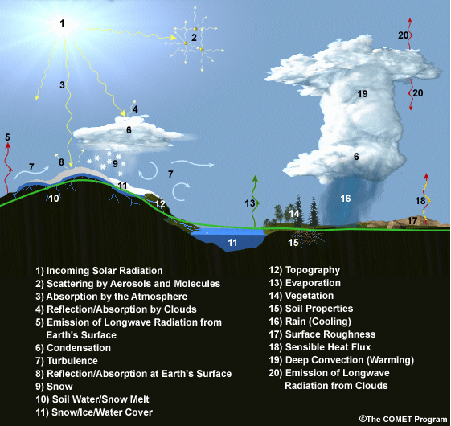
WRF diimplementasikan dalam bahasa pemrograman komputer. Jika Anda melihat repositori github WRF, jenis bahasa pemrograman yang paling banyak digunakan adalah Fortran yang berisikan algoritme berbagai perhitungan fisika dan kimia. Model WRF dapat dijalankan pada personal komputer hingga super komputer. Sebenarnya, Anda dapat menjalankan WRF dengan hanya 1 prosesor, tetapi mungkin membutuhkan waktu lama akibat dari resolusi spasial dan temporal yang tinggi, serta cakupan pemilihan wilayah yang cukup luas. Proses perhitungan model dinamik maupun fisik akan lebih cepat apabila memakai banyak prosesor atau yang bisa disebut dengan komputasi paralel. Kerangka kerja perangkat lunak WRF mendukung komputasi paralel yang efisien pada berbagai platform komputasi. Model atmosfer membawa kumpulan komputasi yang sama di setiap piksel vertikal maupun horizontal Gambar 2.2. Kita mungkin telah mengenal jenis prosesor yang tersedia saat ini, seperti Intel dan AMD. Jenis prosesor yang dibuat dapat mempengaruhi kecepatan proses perhitungan. Untuk perhitungan paralel, Anda dapat menggunakan tipe prosesor desktop, mobile (prosesor di laptop), maupun server, tetapi juga perlu memperhatikan banyaknya core maupun frekuensi yang tertera pada setiap tipe prosesor.
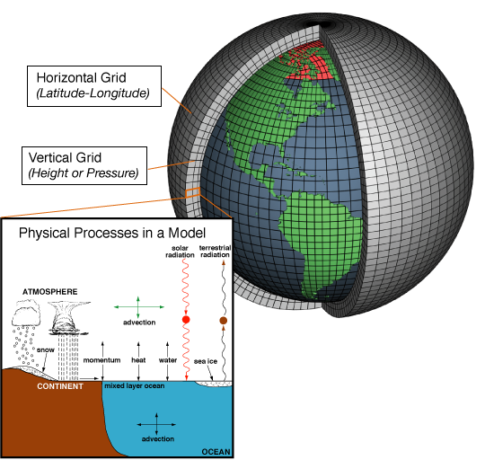
Terkait dengan bahasa pemrograman yang digunakan di dalam WRF, yaitu bahasa Fortran dan C, kode skrip terlebih dahulu harus dikompilasi dengan program Compiler. Compiler ini bertujuan mengubah bahasa dari kode yang diketik menjadi bahasa mesin. Ada berbagai macam program Compiler yang tersedia secara gratis, salah satunya adalah GNU Compiler Collection (gcc). Selain GNU, perusahaan seperti Intel, AMD, maupun NVIDIA juga memiliki program Compiler yang dapat digunakan secara gratis serta mendukung komputasi paralel. Di dalam modul praktikum ini, Anda dapat memilih salah satu dari dua Compiler yang akan dijelaskan, yaitu GNU atau Intel. Kami mencoba melakukan simulasi WRF dengan 10 kali ulangan pada dua tipe Compiler dan Prosesor. Perbedaan penggunaan tipe Compiler serta Prosesor dapat mempengaruhi waktu simulasi Gambar 2.3.
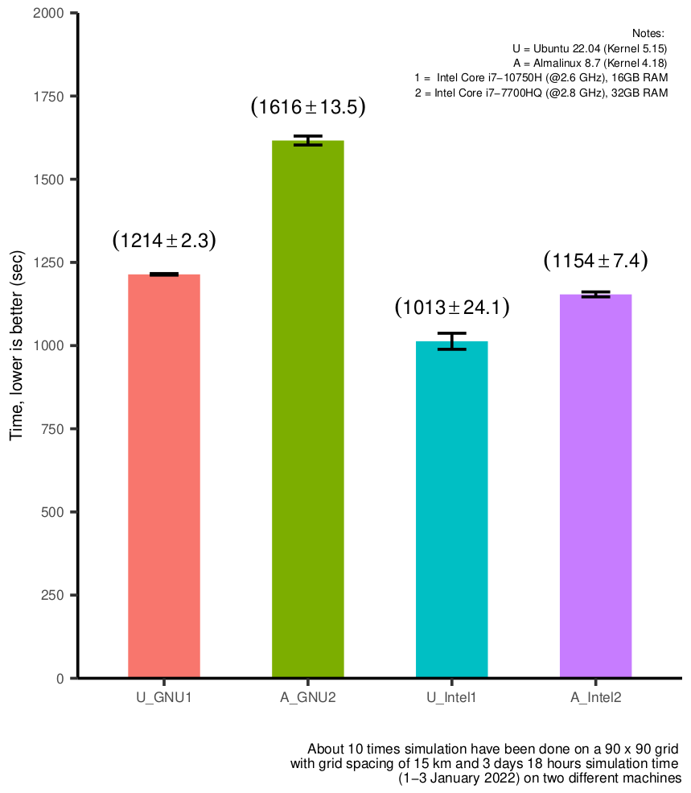
2.2 Pemrograman Bash
Sebagai salah satu tool scripting yang umum digunakan pada Linux, Bash (Bourne Again Shell) sangat bermanfaat bagi para penggunanya. Sebagian besar dalam menjalankan model iklim, Bash digunakan untuk menjalankan instalasi, simulasi, sampai pada analisis data. Pengguna model iklim disarankan mempelajari dasar-dasar pemrograman ini agar memahami berbagai perintah dari cara kerja instalasi dan simulasi dari model iklim tertentu. Para pengembang model iklim biasanya menyediakan dokumen User Guide. File ini berisi mengenai cara instalasi, simulasi, informasi file, dan berbagai aplikasi tambahan dalam mengoperasikan/menjalankan model iklim tersebut. Bagi para pengguna Windows atau MacOS, perhatikan subbab di bawah ini.
2.2.1 Pemrograman Bash pada Sistem Operasi Windows
Bagi Anda yang memiliki sistem operasi Windows, Anda diharuskan memasang Windows Subsystem Linux (WSL) untuk dapat menjalankan Bash. Untuk menjalankan WRF, Anda memerlukan sistem operasi berbasis Linux dengan distribusi yang tersedia saat ini. Pada modul ini, distro Ubuntu dipilih untuk simulasi WRF. WSL dapat digunakan bagi pengguna Windows 10/11. WSL dapat dijalankan pada Windows 10/11 dan Windows Server 2019 dengan versi minimum 1803. Saat ini, WSL versi 2 (WSL-2) telah tersedia yang dapat berjalan pada Windows 10 versi 1903 ke atas. Kami merekomendasikan Anda untuk memasang WSL-2 daripada WSL-1 karena prosesnya lebih cepat. Untuk mengaktifkan WSL, Anda dapat mengikuti beberapa langkah berikut ini.
- Unduh WSL-2 pada halaman ini dan Install.
- Buka menu Control Panel dan cari Program and Features
- Klik Turn Windows Features On or Off
- Scroll ke paling bawah. Kemudian, aktifkan tanda centang pada Windows Subsystem for Linux dan Virtual Machine Platform
- Tunggu proses update sampai selesai, kemudian klik Restart Now (pastikan simpan data-data pekerjaan dan tutup semua aplikasi)
- Setelah proses restart selesai, cari aplikasi dan unduh Ubuntu pada Microsoft Store
- Buka aplikasi Ubuntu yang telah terunduh dan tunggu konfigurasi selesai
- Masukkan Username dan Password (Catatan: kami sarankan sama dengan user dan pass Windows 10/11, tetapi boleh beda. Hasil ketikan password tidak muncul di terminal)
- Ketikkan pada terminal
bash sudo apt update - Anda juga dapat membuka terminal Ubuntu pada terminal Windows PowerShell atau Command Prompt dengan mengetik
wslatauwsl.exe
Selain WSL, Anda juga dapat menggunakan Cygwin atau MinGW, hanya saja Anda perlu memilih beberapa paket yang akan digunakan. Tentu cara ini sangat rumit dan membutuhkan waktu cukup lama saat instalasi.
2.2.2 Instalasi Docker pada MacOS (chipset M1 dan M2)
Untuk MacOS, aplikasi terminal-nya sudah mendukung Bash, hanya saja WRF tidak bisa dipasang, khususnya pada arsitektur ARM64 (MacBook M1 atau M2). Kami sudah mengikuti langkah-langkah pada website WRF-Forum ini, tetapi masih terdapat kendala. Oleh karena itu, kami menggunakan aplikasi Docker sebagai solusi.
Unduh dan pasang Docker untuk MacOS berdasarkan prosesor pada link di bawah ini.
Buka aplikasi Docker melalui menu atau melalui terminal dengan perintah berikut ini.
open -a DockerJendela Docker Desktop akan muncul.
Kemudian, tutup aplikasi Docker Desktop. Perintah ini tidak memberhentikan proses Docker, hanya menutup mode GUI-nya saja. Aplikasi Docker masih terus berjalan apabila ada icon Docker pada notifikasi.
Bukalah terminal
Ketikkan perintah berikut untuk mengunduh image Ubuntu versi 20.04
docker pull ubuntu:20.04Untuk menjalankan image, ketikkan perintah berikut.
docker run -it --name wrf-ubuntu ubuntu:20.04Perintah ini menjalankan image Ubuntu versi 20.04 dan masuk ke container dengan nama
wrf-ubuntu. Anda dapat mengetikkan perintah-perintah Bash di dalam container ini.Terdapat beberapa perintah yang belum tersedia seperti pada Ubuntu versi Desktop maupun WSL. Misalnya perintah
nano,wget,bash-completion, dangit. Untuk mengunduhnya, ketikkan perintah berikut.apt update apt -y install nano wget git bash-completionCatatanUntuk selanjutnya, Anda tidak perlu mengetik perintah
sudo(seperti pada WSL) di dalam terminal Docker karena Anda sudah masuk sebagai root.Untuk keluar dari container Ubuntu, ketikkan perintah
exitatau dengan shortcutCtrl + D.Jika Anda ingin menjalankan container Ubuntu yang sudah dibuat sebelumnya, ketikkan perintah berikut.
docker start -i wrf-ubuntu
Penggunaan Docker pada MacOS HANYA untuk menjalankan WRF saja. Selebihnya pada tahapan analisis/visualisasi data, Anda dapat menggunakan software lain yang masih mendukung MacOS.
2.2.3 Dasar-dasar Pemrograman Bash
Bash merupakan terminal shell umum pada Linux. Anda bisa menjalankan shell lain, seperti ksh (Korn Shell), zsh, dan csh (C shell). Untuk menjalankan Bash, Anda bisa menekan Ctrl+Alt+T atau carilah aplikasi Terminal. Khusus Windows 10, Anda dapat mencari aplikasi “Ubuntu” atau “wsl.exe”. Tampilan Bash seperti pada Gambar 2.4. Tulisan menunjukkan nama user dan tanda berarti menunjukkan lokasi folder saat ini.
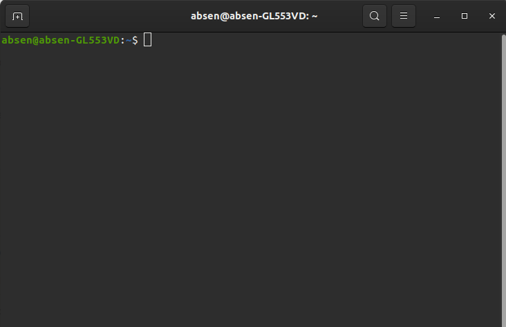
Jika Anda mengetik perintah pwd pada Bash, hasilnya adalah seperti di bawah ini atau bisa dilihat pada Gambar 2.5.
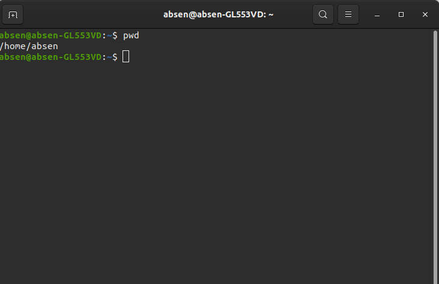
pwd pada terminal BashPerintah dasar lainnya yang sering digunakan oleh pengguna Linux adalah ls atau ll (Gambar 2.6). Perintah ini berfungsi untuk melihat nama folder dan file yang berada di direktori pada lokasi saat ini. Untuk berpindah lokasi folder, Anda dapat mengetik perintah cd dan pilih folder yang ingin dibuka, contohnya cd Documents/ atau cd Documents (Gambar 2.7). Anda dapat kembali ke folder sebelumnya dengan mengetik perintah cd ..
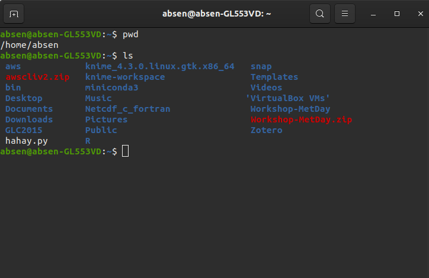
ls pada terminal Bash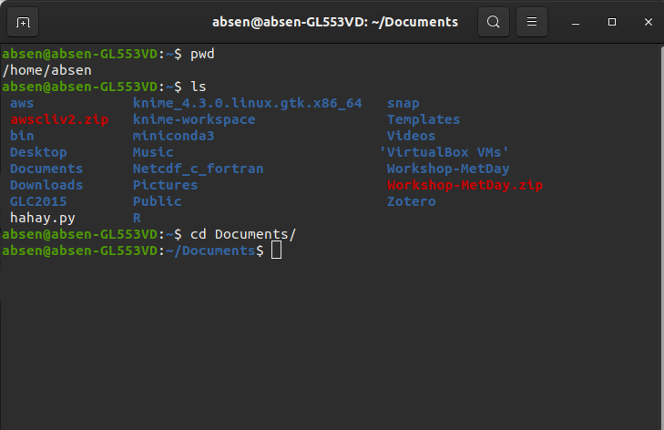
cd pada terminal BashAnda dapat membuat folder baru dengan perintah mkdir, memindahkan folder atau file dengan mv, menghapus file dengan rm, menghapus folder dengan rmdir, membuat file baru dengan touch, dan menyalin folder atau file dengan cp. Contoh penggunaan beberapa perintah tersebut dapat dilihat sebagai berikut.
Misalkan kita ingin membuat folder
Tes-foldermkdir Tes-folderAnda juga dapat membuat lebih dari 1 folder, misalnya
Tes-folder-1danTes-folder-2mkdir Tes-folder-1 Tes-folder-2Untuk memastikan ketiga folder tersebut telah dibuat, ketik perintah
lslsMisalkan kita ingin membuat file
tes-filedi dalam folderTes-folder. Perintahtouchbertujuan membuat file kosong.cd Tes-folder touch tes-file lsKemudian, file
tes-filekita pindahkan ke direktori sebelumnya dan diganti namanya dengantes-file-pindahmv tes-file ../tes-file-pindahKembali ke folder sebelumnya
cd ..Ketik perintah
lsuntuk memastikan filetes-filetelah dipindahkan ke direktori sebelumnya dengan berubah nama menjadites-file-pindahlsFile
tes-file-pindahdihapus menggunakan perintahrmrm tes-file-pindah lsUntuk menghapus folder, misalkan
Tes-folder-1, Anda dapat menggunakan perintahrmdengan ditambahkan parameter-rf.rm -rf Tes-folder-1
Hati-hati dalam menggunakan parameter -rf karena folder yang telah dihapus beserta file-file di dalamnya tidak berada di dalam Recycle Bin
2.3 Instalasi Software Pengolahan Data dan Model WRF
Pada tahapan ini, Kami menjelaskan mengenai tahapan instalasi aplikasi pengolahan data pendukung untuk memproses data luaran WRF serta instalasi model WRF di Ubuntu versi 20.04. Saat kami menguji WRF di Ubuntu, proses instalasi serta simulasi tidak mengalami masalah. Anda dipersilahkan menggunakan distro yang lain, seperti Fedora, CentOS, Almalinux, atau Manjaro, tetapi kami tidak dapat menjamin keberhasilan instalasi dan simulasi pada distro tersebut.
2.3.1 Instalasi Software Pengolahan Data
NCAR Command Language (NCL) dan Python
NCL merupakan bahasa pemrograman interpreter yang dikembangkan oleh National Centre of Atmospheric Research (NCAR) dan memiliki kegunaan dalam proses analisis dan visualisasi data-data cuaca dan iklim. Aplikasi NCL dibutuhkan untuk memvisualisasikan lokasi kajian sebelum disimulasikan. Pengembang WRF telah menyediakan skrip NCL untuk memudahkan dalam ketepatan pemilihan lokasi sesuai dengan keinginan pengguna. Python merupakan bahasa pemrograman general yang memiliki banyak kegunaan, khususnya dalam analisis dan visualisasi data-data dengan tambahan modul (packages). Dalam menuliskan kode Python, Anda dapat menggunakan teks editor yang umum digunakan seperti Jupyter Notebook. Untuk modul yang akan dipakai dalam praktikum ini adalah wrf-python. Langkah-langkah pemasangan NCL dan Python sebagai berikut.
Untuk memasang NCL, Anda harus mengunduh aplikasi Miniconda untuk Linux pada website https://repo.anaconda.com/miniconda/Miniconda3-py39_22.11.1-1-Linux-x86_64.sh dengan perintah pada terminal Bash sebagai berikut.
wget https://repo.anaconda.com/miniconda/Miniconda3-py39_22.11.1-1-Linux-x86_64.shAnda tidak dapat menggunakan NCL pada sistem operasi Windows, kecuali Anda memiliki Windows Subsystem Linux (WSL).
Kemudian, lakukan pemasangan Miniconda dengan perintah di bawah ini.
bash Miniconda3-py39_22.11.1-1-Linux-x86_64.shSelanjutnya tekan ENTER. Terminal akan menampilkan End-User License Agreement (EULA), tekan ENTER atau SPACE sampai muncul perintah seperti di bawah ini.
Do you accept the license terms? [yes|no] [no] >>>Kemudian, ketikkan
yesuntuk melanjutkan proses instalasi dan tekan ENTER. Secara otomatis, Python sebenarnya telah terpasang di dalam Miniconda.
Tutup terminal Anda dan buka kembali. Perhatikan pada tulisan
(base)di paling kiri nama user. Jika tulisan tersebut sudah muncul, proses pemasangan Miniconda telah berhasil.Selanjutnya, lakukan pemasangan package
mambadengan perintah.conda install mamba -n base -c conda-forge
Package mamba memungkinkan dapat mempercepat pengunduhan dan pemasangan package-package di dalam Miniconda.
Lakukan proses pembuatan environment dengan nama
ncldan pemasangan NCL beserta package lainnya dengan perintah.conda create -n ncl conda activate ncl mamba install -c conda-forge jupyter notebook xarray netcdf4 scipy pyngl pynio matplotlib cartopy wrf-python ncl
Saat modul ini dibuat, paket wrf-python belum mendukung arsitektur MacOS M1/M2, baik di terminal MacOS maupun terminal Linux melalui Docker, kecuali MacOS Intel. Kami sarankan Anda dapat menggunakan aplikasi lainnya seperti RStudio, Julia, atau Python untuk pengolahan data luaran WRF.
Saat Anda ingin memulai menggunakan program NCL, aktifkan terlebih dahulu environment
ncldengan perintah di bawah ini. Kemudian, tulisan(base)menjadi(ncl)yang menandakan bahwa environment telah berhasil diaktifkan.conda activate nclUntuk membuka Jupyter Notebook, gunakan perintah ini. Aplikasi akan muncul pada browser bawaan Anda (Google Chrome, Microsoft Edge, atau Safari).
jupyter notebookUntuk menutup Jupyter Notebook, Anda dapat menekan tombol
CTRL+Cpada terminal.Untuk keluar dari environment
ncl, ketikkan perintahconda deactivate.
Environment ncl akan terus dipakai, mulai dari pemasangan WRF hingga analisis dan visualisasi luaran WRF. NCAR telah mengembangkan wrf-python secara khusus untuk analisis dan visualisasi luaran WRF.
R dan RStudio
Sama seperti Python dan NCL, R merupakan bahasa pemrograman interpreter, namun dibuat secara khusus untuk analisis dan visualisasi data-data statistik. Beberapa package R telah dikembangkan untuk memudahkan proses analisis data-data cuaca dan iklim, seperti ncdf4, raster, dan metR. RStudio umum digunakan dalam mengetik bahasa pemrograman R secara interaktif. Untuk menuliskan skrip R, dibutuhkan aplikasi teks editor, salah satunya adalah RStudio. RStudio mendukung bukan hanya menuliskan skrip R, melainkan bahasa pemrograman lainnya, seperti Markdown, C++, Javascript, dan Python. Sebenarnya, Anda dapat menuliskan skrip Python pada RStudio dengan bantuan package reticulate. Hanya saja di dalam modul ini, Kami menggunakan Jupyter Notebook untuk menuliskan skrip Python.
Untuk mengunduh R dan RStudio Desktop, Anda dapat menggunakan halaman website di bawah ini sesuai dengan sistem operasi yang Anda gunakan. Bagi pengguna Windows, Anda diharuskan mengunduh aplikasi Rtools karena beberapa paket tertentu membutuhkan kompilasi dengan Compiler GNU pada saat proses instalasi, seperti raster, tidyverse, dan ncdf4.
- R
- Windows 10/11: https://cran.r-project.org/bin/windows/base/R-4.2.2-win.exe
- MacOS (Intel): https://cran.r-project.org/bin/macosx/base/R-4.2.2.pkg
- MacOS (ARM, M1/M2): https://cran.r-project.org/bin/macosx/big-sur-arm64/base/R-4.2.2-arm64.pkg
- Ubuntu: ikuti perintah dan langkah-langkah di https://cran.r-project.org/bin/linux/ubuntu
- RStudio
Julia
Bahasa pemrograman ini relatif baru dibandingkan dengan Python dan R. Sama seperti keduanya, Julia merupakan bahasa pemrograman interpreter dan tersedia gratis. Pengembang Julia mengatakan bahwa bahasa ini memiliki kecepatan eksekusi secepat bahasa C/C++. Artinya, kecepatan eksekusi Julia berpotensi lebih cepat daripada Python maupun R. Anda dapat mengunduh Julia di julialang.org sesuai dengan sistem operasi yang Anda miliki. Untuk membaca data netcdf dari WRF, Anda dapat menggunakan package NetCDF.jl. Anda perlu memasang package tersebut pada terminal interaktif Julia. Untuk menuliskan skrip Julia, Anda dapat memanfaatkan Jupyter Notebook dan tentunya memerlukan package IJulia.jl. Berikut ini adalah langkah-langkahnya.
Buka terminal interaktif Julia (julia) dan ketikkan perintah berikut untuk memasang package
NetCDF.jldanIJulia.jl.using Pkg Pkg.add("NetCDF") Pkg.add("IJulia")Setelah berhasil memasang package, Anda dapat menuliskan skrip Julia pada Jupyter Notebook. Untuk membuka Jupyter Notebook, ketikkan perintah berikut pada terminal interaktif Julia.
using IJulia notebook()Skrip tersebut akan mengeksekusi instalasi miniconda di dalam Julia dengan disertai Jupyter Notebook. Jika instalasi berhasil, Jupyter Notebook akan terbuka di browser Anda (Google Chrome, Microsoft Edge, atau Safari). Untuk menutup Jupyter Notebook, Anda dapat menekan tombol
CTRL+Cpada terminal interaktif Julia.
2.3.2 Sebelum Mulai
Anda perlu mencoba dasar pemrograman Bash sebelum memulai mengunduh data, memasang beberapa package, sampai menjalankan simulasi WRF. Silahkan Anda ikuti langkah-langkah di bawah ini agar memudahkan dalam mencoba praktikum ini.
Buka terminal Bash
Untuk Windows 10/11, buka aplikasi Windows Power Shell. Kemudian, ketikkan perintah seperti di bawah ini. Setelahnya, akan muncul terminal Bash.
wslUntuk Ubuntu atau disto Linux lainnya, carilah program Terminal atau bisa menggunakan shortcut Ctrl+Alt+T
Untuk MacOS M1/M2 menggunakan Docker, jalankan image Ubuntu versi 20.04 pada terminal dengan perintah di bawah ini.
docker run -it --name wrf-ubuntu ubuntu:20.04
Saat Anda membuka terminal, pastikan lokasi folder/direktori saat ini adalah
/home/<user_name>, di manauser_nameadalah nama user pada laptop/komputer Anda masing-masing. Perhatikan kembali Gambar 2.5 bahwa untuk melihat lokasi direktori Anda sekarang bisa mengetik perintahpwdpada terminal atau dengan melihat simbol~yang terletak di sebelah kiri$. Untuk Docker, lokasi direktori saat ini adalah/. Lokasi$HOMEberada di folder/root.cd $HOMEBuat folder kerja dengan nama
WRF-Modeluntuk menampung data-data, package, serta source code WRF. Perintah pada terminal Bash adalah sebagai berikut.mkdir WRF-ModelKemudian, bukalah folder
WRF-Model(atau dengan nama lainnya) dengan perintahcd WRF-ModelSekarang, Anda berada di folder
WRF-Model(Perhatikan~berubah menjadi~/WRF-Model)Di dalam
WRF-Model, buatlah folderdataguna untuk meletakkan data masukan WRF (data statik dan data cuaca).Unduh source code WPS (WRF Pre-Processing) dan WRF pada halaman Github NCAR. Source code WRF berisikan algoritma perhitungan fisik dan dinamik atmosfer, sedangkan WPS berisikan algoritma persiapan data masukan atmosfer dari GCM dan pemilihan lokasi dan waktu. Gunakan perintah di bawah ini.
# 1. Unduh WPS git clone https://www.github.com/wrf-model/WPS # 2. Unduh WRF git clone https://www.github.com/wrf-model/WRF
Langkah-langkah di atas masih berlanjut pada subbab selanjutnya.
2.3.3 Data dan Software Pendukung
Software Pendukung
Untuk memasang WRF, Anda perlu menyiapkan perangkat lunak pendukung serta data contoh untuk mensimulasikan WRF. Perangkat lunak tersebut dapat diunduh melalui halaman Github ini. Untuk mengunduh source code, pilih <> Code \(\rightarrow\) Download ZIP (Gambar 2.8). Anda dapat mengunduh secara manual atau menggunakan perintah git clone pada terminal.
sudo apt -y install git #Install program git jika belum ada
git clone https://www.github.com/agungbaruna/pyWRF-install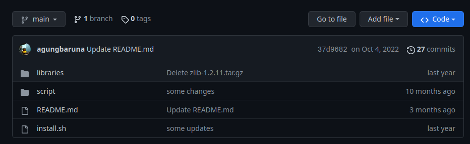
Data
Data-data masukan untuk WRF telah tersedia dan unduh pada halaman web https://s.id/wrf-data. Kami menyarankan untuk menggunakan Wi-Fi karena ukuran data cukup besar. Data yang telah diunduh Anda pindahkan ke folder data yang berada di dalam WRF-Model.
1. Global Forecast System (GFS)
Untuk data masukan yang digunakan berasal dari NOAA yang bernama Global Forecasts System (GFS). GFS memiliki resolusi spasial \(0.25^o\) (~25 km), \(0.50^o\) (~50 km), dan \(1.00^o\) (~ 100 km). GFS memiliki produk data prakiraan maupun analisis/historis cuaca secara global dengan resolusi temporal per 1 dan 3 jam. Anda dapat mengunduh data ini pada salah satu halaman web berikut.
- AWS S3: https://noaa-gfs-bdp-pds.s3.amazonaws.com
- Resarch Data Archive (RDA) NCAR: https://rda.ucar.edu/datasets/ds084.1
- NCEP Central Operations: https://nomads.ncep.noaa.gov/
Data GFS yang digunakan dalam praktikum ini memiliki waktu 1-3 Januari 2022 pada pukul 00:00, 06:00, 12:00, dan 18:00 UTC dengan resolusi spasial \(1.00^o\) yang telah diunduh pada halaman web AWS S3 Bucket.
2. ERA5
Selain GFS, Anda dapat menggunakan data masukan dari institusi lain, seperti ECMWF pada produk ERA5. ERA5 merupakan data reanalisis sehingga hanya memiliki produk historis. Anda dapat mengunduhnya melalui Climate Data Store (CDS) pada halaman https://cds.climate.copernicus.eu. ERA5 memiliki resolusi spasial sebesar \(0.25^o\) dengan temporal per 1 jam. Data ERA5 memiliki dua tipe, yaitu data permukaan tanah (Single Levels) dan atmosfer untuk setiap ketinggian (Pressure Levels). Anda diharuskan mengunduh dua tipe data ini dengan variabel yang dipilih adalah sebagai berikut.
ERA5 hourly data on Pressure Levels:
geopotential relative humidity specific humidity temperature u-component wind v-component wind ERA5 hourly data on Single Levels:
10m u-component of wind 10m v-component of wind 2m dewpoint temperature 2m temperature land sea mask mean sea level pressure sea ice cover sea surface temperature skin temperature snow depth soil temperature level 1 soil temperature level 2 soil temperature level 3 soil temperature level 4 surface pressure volumetric soil water layer 1 volumetric soil water layer 2 volumetric soil water layer 3 volumetric soil water layer 4
Anda tidak diharuskan mengunduh semua waktu karena CDS membatasi banyaknya permintaan data dari pengguna sehingga Anda tidak dapat mengunduh semua data sekaligus. Data ERA5 yang akan digunakan pada praktikum ini memiliki waktu yang sama dengan GFS.
3. Data Statik WPS
Data statik ini wajib diunduh untuk menjalankan WRF. Isi data ini seperti tipe permukaan lahan, nilai Leaf Area Index (LAI), tipe tanah, dan elevasi permukaan. Anda dapat mengunduhnya di https://www2.mmm.ucar.edu/wrf/src/wps_files/geog_high_res_mandatory.tar.gz. File tersebut berukuran 2 GB dan setelah diekstrak dapat mencapai 30 GB. Data ini sudah tersedia di dalam link https://s.id/wrf-data. Untuk mengekstraknya, gunakan perintah berikut.
cd data
gunzip geog_high_res_mandatory.tar.gz
tar -xf geog_high_res_mandatory.tar
cd .. # Kembali ke folder WRF-ModelSelanjutnya, folder WPS_GEOG akan muncul di dalam folder data/
2.3.4 Instalasi Software Compiler
Instalasi ini meliputi cara melakukan kompilasi dengan dua Compiler berbeda, yaitu GNU dan Intel. Anda dipersilahkan memilih salah satu langkah. Proses kompilasi untuk semua package yang telah terunduh tidak dapat dilakukan pada Compiler yang berbeda.
1. GNU
Sebelum Anda memasuki tahapan instalasi package yang terdapat dalam folder pyWRF-install, pasang terlebih dahulu package dependencies dengan perintah di bawah ini.
sudo apt -y update && sudo apt -y upgrade
sudo apt -y install gfortran gcc make m4 csh g++2. Intel
Berbeda dengan GNU, tipe Compiler Intel memang agak rumit untuk memasangnya. Namun, Compiler ini sebenarnya lebih efisien dalam hal kecepatan saat mensimulasikan WRF. Kami sudah membandingkan waktu simulasi dengan Compiler tipe ini lebih cepat dibandingkan dengan GNU Gambar 2.3.
Anda dapat memperoleh software ini di halaman resmi Intel. Kami sudah menyediakan software tersebut pada tautan s.id/wrf-intel-compiler. Terdapat 2 file instalasi Compiler, yaitu Fortran, C, dan MPI (untuk komputasi paralel). Jumlah ukuran 2 file tersebut cukup besar, sekitar 5 GB. Letakkan 2 file ini di dalam folder WRF-Model. Perhatikan langkah-langkah berikut ini.
# 0. Package pendukung
sudo apt -y install make m4 csh
# 1. oneAPI Base Toolkit
bash l_BaseKit_p_2023.1.0.46401_offline.sh -a -s --eula accept
# 2. oneAPI HPC Toolkit
bash l_HPCKit_p_2023.1.0.46346_offline.sh -a -s --eula acceptLokasi folder hasil instalasi terdapat di $HOME/intel. Perintah untuk memanggil program Compiler Intel belum menjadi ENVIRONMENT VARIABLE. Untungnya, Intel menyediakan skrip untuk memanggil semua program Compiler secara default, yaitu terdapat di dalam $HOME/intel/oneapi/setvars.sh. Ketika memanggil skrip tersebut, ENVINRONMENT VARIABLE milik Miniconda secara otomatis dinonaktifkan (tulisan <base> hilang). Perintah untuk memanggil skrip setvars.sh adalah sebagai berikut.
source $HOME/intel/oneapi/setvars.sh2.3.5 Instalasi Package
Instalasi beberapa package meliputi zlib, libpng, jasper, hdf5, netcdf-c, dan netcdf-fortran. Perlu diperhatikan dan lihat pada terminal bahwa Anda berada di folder ~/WRF-Model. Masukkan beberapa perintah ENVIRONMENT VARIABEL di bawah ini dengan perintah export.
export ODIR=$HOME/WRF-Model
export PATH=$ODIR/bin:$PATH
export LD_LIBRARY_PATH=$ODIR/lib:$LD_LIBRARY_PATH
export LDFLAGS=-L$ODIR/lib
export CPPFLAGS=-I$ODIR/include
export NETCDF=$ODIR
export HDF5=$ODIR
export JASPERLIB=$ODIR/lib
export JASPERINC=$ODIR/includeLangkah ini wajib dilakukan pada saat melakukan instalasi package, WRF, dan WPS. Pendefinisian ENVIRONMENT VARIABLE ini berlaku untuk GNU maupun Intel.
1. GNU
Berikut ini langkah-langkah memasang package pada Compiler GNU. Buka terlebih dahulu folder pyWRF-install/libraries dengan mengetik perintah cd pyWRF-install/libraries. Kemudian, ikuti langkah-langkah berikut ini.
zlib
# 0. Buka folder libraries cd $ODIR/pyWRF-install/libraries # 1. Extract tar -xf zlib-1.2.13.tar.gz # 2. Buka folder hasil ekstrak cd zlib-1.2.13 # 3. Konfigurasi CC=gcc ./configure --prefix=$ODIR # 4. Instalasi make check installlibpng
# 0. Buka folder libraries cd $ODIR/pyWRF-install/libraries # 1. Extract tar -xf libpng-1.6.37.tar.gz # 2. Buka folder hasil ekstrak cd libpng-1.6.37 # 3. Konfigurasi CC=gcc ./configure --prefix=$ODIR # 4. Instalasi make check installjasper
# 0. Buka folder libraries cd $ODIR/pyWRF-install/libraries # 1. Extract tar -xf jasper-1.900.1.tar.gz # 2. Buka folder hasil ekstrak cd jasper-1.900.1 # 3. Konfigurasi CC=gcc ./configure --prefix=$ODIR # 4. Instalasi make check installBagi pengguna MacOS M1/M2 dengan terminal Docker, gunakan perintah berikut ini untuk instalasi Jasper.
# 0. Buka folder libraries cd $ODIR/pyWRF-install/libraries # 1. Extract tar -xf jasper-1.900.1.tar.gz # 2. Buka folder hasil ekstrak cd jasper-1.900.1 # 3. Mengunduh config.guess wget -N -O acaux/config.guess "http://git.savannah.gnu.org/gitweb/?p=config.git;a=blob_plain;f=config.guess;hb=HEAD" # 4. Konfigurasi CC=gcc ./configure --prefix=$ODIR # 5. Instalasi make check installopenMPI
Jika Anda berencana menjalankan WRF hanya dengan 1 prosesor, Anda dapat melewati langkah ini. Akan tetapi, kami menyarankan untuk memasang program ini untuk mempersingkat waktu simulasi WRF.
# 0. Buka folder libraries cd $ODIR/pyWRF-install/libraries # 1. Extract tar -xf openmpi-4.1.4.tar.gz # 2. Buka folder hasil ekstrak cd openmpi-4.1.4 # 3. Konfigurasi CC=gcc FC=gfortran ./configure --prefix=$ODIR # 4. Instalasi make make installhdf5
# 0. Buka folder libraries cd $ODIR/pyWRF-install/libraries # 1. Extract tar -xf hdf5-1.12.0.tar.gz # 2. Buka folder hasil ekstrak cd hdf5-1.12.0 # 3. Konfigurasi CC=gcc FC=gfortran ./configure --prefix=$ODIR --with-default-api-version=v18 --enable-fortran # 4. Instalasi make make installnetcdf-c
# 0. Buka folder libraries cd $ODIR/pyWRF-install/libraries # 1. Extract tar -xf netcdf-c-4.7.4.tar.gz # 2. Buka folder hasil ekstrak cd netcdf-c-4.7.4 # 3. Konfigurasi CC=gcc ./configure --prefix=$ODIR --disable-dap # 4. Instalasi make make installnetcdf-fortran
# 0. Buka folder libraries cd $ODIR/pyWRF-install/libraries # 1. Extract tar -xf netcdf-fortran-4.5.3.tar.gz # 2. Buka folder hasil ekstrak cd netcdf-fortran-4.5.3 # 3. Konfigurasi CC=gcc FC=gfortran ./configure --prefix=$ODIR # 4. Instalasi make make install
2. Intel
Berikut ini langkah-langkah memasang package pada Compiler Intel. Buka terlebih dahulu folder pyWRF-install/libraries dengan mengetik perintah cd pyWRF-install/libraries. Untuk proses instalasi menggunakan Intel, sama saja dengan GNU. Hanya saja, perbedaannya adalah definisi dari variabel CC maupun FC. Untuk Intel, variabel CC=icc dan FC=ifort. Jangan lupa untuk mengaktifkan ENVIRONMENT VARIABLE dari Intel dengan mengetik perintah ini!
source ~/intel/oneapi/setvars.shzlib
# 0. Buka folder libraries cd $ODIR/pyWRF-install/libraries # 1. Extract tar -xf zlib-1.2.13.tar.gz # 2. Buka folder hasil ekstrak cd zlib-1.2.13 # 3. Konfigurasi CC=icc CFLAGS='-diag-disable=10441' ./configure --prefix=$ODIR # 4. Instalasi make check installlibpng
# 0. Buka folder libraries cd $ODIR/pyWRF-install/libraries # 1. Extract tar -xf libpng-1.6.37.tar.gz # 2. Buka folder hasil ekstrak cd libpng-1.6.37 # 3. Konfigurasi CC=icc CFLAGS='-diag-disable=10441' ./configure --prefix=$ODIR # 4. Instalasi make check installjasper
# 0. Buka folder libraries cd $ODIR/pyWRF-install/libraries # 1. Extract tar -xf jasper-1.900.1.tar.gz # 2. Buka folder hasil ekstrak cd jasper-1.900.1 # 3. Konfigurasi CC=icc CFLAGS='-diag-disable=10441' ./configure --prefix=$ODIR # 4. Instalasi make check installhdf5
# 0. Buka folder libraries cd $ODIR/pyWRF-install/libraries # 1. Extract tar -xf hdf5-1.12.0.tar.gz # 2. Buka folder hasil ekstrak cd hdf5-1.12.0 # 3. Konfigurasi CC=icc FC=ifort CFLAGS='-diag-disable=10441' ./configure --prefix=$ODIR --with-default-api-version=v18 --enable-fortran # 4. Instalasi make make installnetcdf-c
# 0. Buka folder libraries cd $ODIR/pyWRF-install/libraries # 1. Extract tar -xf netcdf-c-4.7.4.tar.gz # 2. Buka folder hasil ekstrak cd netcdf-c-4.7.4 # 3. Konfigurasi CC=icc CFLAGS='-diag-disable=10441' ./configure --prefix=$ODIR --disable-dap # 4. Instalasi make make installnetcdf-fortran
# 0. Buka folder libraries cd $ODIR/pyWRF-install/libraries # 1. Extract tar -xf netcdf-fortran-4.5.3.tar.gz # 2. Buka folder hasil ekstrak cd netcdf-fortran-4.5.3 # 3. Konfigurasi CC=icc FC=ifort CFLAGS='-diag-disable=10441' ./configure --prefix=$ODIR # 4. Instalasi make make install
2.3.6 Instalasi WRF
Proses instalasi WRF membutuhkan waktu agak lama, yaitu sekitar 30-60 menit. Tentunya, ini bergantung pada spesifikasi prosesor yang Anda gunakan, serta tipe Compiler. Ikuti langkah-langkah berikut.
Buka direktori
WRFyang berada di dalam$ODIR/WRFdengan perintah.cd $ODIR/WRFJalankan file
configuredengan perintah../configureAnda akan disajikan beberapa teks di dalamnya. Anda disuruh untuk memilih opsi Compiler. Tipe Compiler tersebut selain GNU dan Intel, ada pula IBM, PGI, Fujitsu, Pathscale, dan CRAY. Jika Anda menggunakan Compiler tipe GNU, ketikkan angka 35. Untuk Intel, ketik angka 16. Setelah itu, tekan Enter.
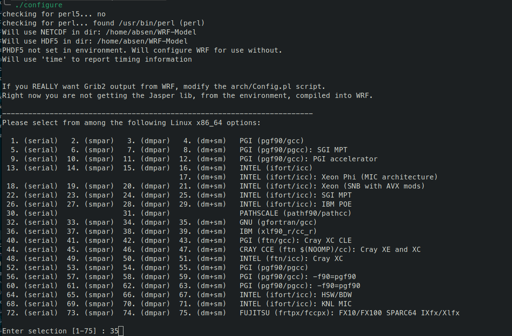 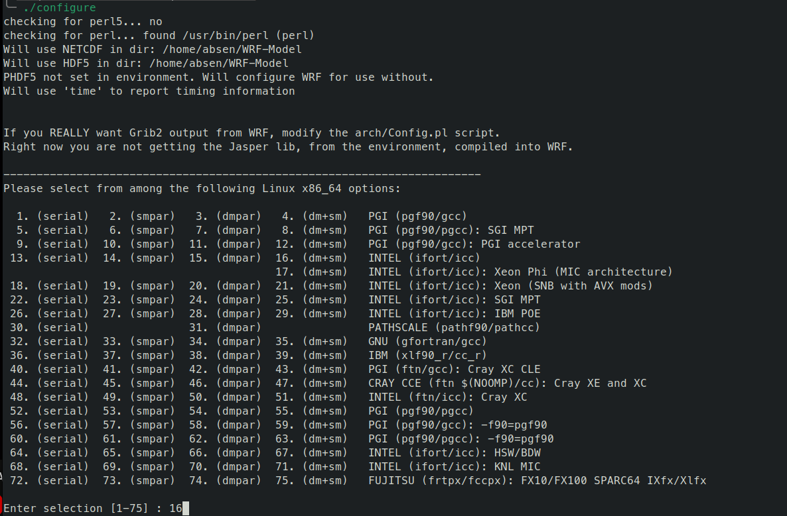Untuk melakukan instalasi, ketik perintah ini.
./compile em_real -j jumlah_prosesordimana
jumlah_prosesoradalah jumlah dari prosesor pada laptop/komputer Anda yang akan digunakan untuk proses instalasi dan kompilasi kode-kode WRF. Proses kompilasi akan memakan waktu yang sangat lama apabila Anda hanya menggunakan 1 prosesor. Pastikan berbagai program pada komputer/laptop Anda yang saat ini sedang dibuka, seperti Google Chrome atau Spotify harap ditutup terlebih dahulu karena ini membantu proses instalasi lebih stabil.Untuk Compiler Intel, setelah langkah ke-2 dijalankan, buka file
configure.wrfdengan perintah.nano configure.wrfKemudian, scroll ke bawah dengan menekan tombol \(\downarrow\) pada keyboard dan ubahlah isinya sesuai aturan pada tabel di bawah ini.
Tabel 2.1: Pengubahan variabel DM_FCdanDM_CCSebelum Sesudah DM_FC = mpif90 -f90=$(SFC)DM_FC = mpiifort -f90=$(SFC)DM_CC = mpicc -cc=$(SCC)DM_CC = mpiicc -cc=$(SCC)Setelah selesai diubah, keluar dari editor nano dengan menekan tombol Ctrl + X
Proses instalasi WRF berhasil dilakukan apabila terdapat file yang berekstensi .exe: ndown.exe, tc.exe, real.exe, dan wrf.exe di dalam folder main. Anda bisa melihatnya dengan perintah
ls main/*.exemain/ndown.exe main/real.exe main/tc.exe main/wrf.exeUntuk pengguna MacOS M1/M2 dengan Docker, ikuti langkah-langkah berikut.
Buka direktori
WRFyang berada di dalam$ODIR/WRF.Ubah file
arch/configure.defaultsmenggunakan teks editornanodengan menambahkan teks ini.nano arch/configure.defaults######################################################################################################################## #ARCH Linux aarch64, Arm compiler OpenMPI # serial smpar dmpar dm+sm# DESCRIPTION = GCC ($SFC/$SCC): Aarch64 DMPARALLEL = OMPCPP = -fopenmp OMP = -fopenmp OMPCC = -fopenmp SFC = gfortran SCC = gcc CCOMP = gcc DM_FC = mpif90 DM_CC = mpicc -DMPI2_SUPPORT FC = CONFIGURE_FC CC = CONFIGURE_CC LD = $(FC) RWORDSIZE = CONFIGURE_RWORDSIZE PROMOTION = ARCH_LOCAL = CFLAGS_LOCAL = -w -O3 -c LDFLAGS_LOCAL = -fopenmp FCOPTIM = -Ofast -march=armv8.2-a+fp16+rcpc+dotprod+crypto -fopenmp -frecursive -funroll-loops FCREDUCEDOPT = $(FCOPTIM) FCNOOPT = -O0 -fopenmp -frecursive FCDEBUG = -g $(FCNOOPT) FORMAT_FIXED = -ffixed-form -ffixed-line-length-0 -Wno-invalid-pch -Wno-argument-mismatch FORMAT_FREE = -ffree-form -ffree-line-length-0 -Wno-argument-mismatch -Wno-invalid-pch FCSUFFIX = BYTESWAPIO = -fconvert=big-endian -frecord-marker=4 FCBASEOPTS = -w $(FORMAT_FREE) $(BYTESWAPIO) MODULE_SRCH_FLAG= -I$(WRF_SRC_ROOT_DIR)/main TRADFLAG = -traditional-cpp CPP = /lib/cpp CONFIGURE_CPPFLAGS AR = ar ARFLAGS = ru M4 = m4 -B 14000 RANLIB = ranlib RLFLAGS = CC_TOOLS = $(SCC)Jalankan program
configuredengan perintah ini../configureKemudian, pilih nomor 4 untuk memilih opsi Linux aarch64, Arm compiler OpenMPI # serial smpar dmpar dm+sm. Setelah itu, tekan Enter. Abaikan saja terhadap respons seperti pada gambar ini.
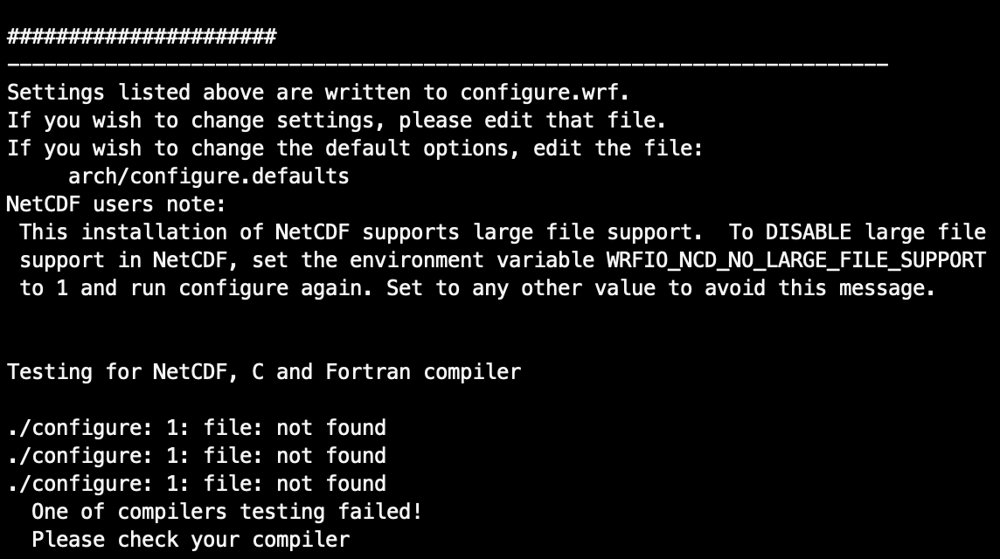Selanjutnya, jalankan program
compiledengan perintah ini../compile em_real -j jumlah_prosesor
2.3.7 Instalasi WRF Pre-Processing (WPS)
Program WPS digunakan untuk menyesuaikan data masukan dari berbagai sumber (ERA5, GFS, NAM, …) sebelum ke simulasi WRF. Terdapat 3 program utama: geogrid.exe, ungrib.exe, dan metgrid.exe.
geogrid.exe: memilih lokasi yang akan dilakukan simulasi. Luaran program ini berupa filegeo_em*yang berisi nilai-nilai dari variabel di dalam file hasil ekstrak geog_high_res_mandatory.tarungrib.exe: mengubah file berformatgribmenjadinc, serta memungkinkan dapat melakukan interpolasi (waktu dan lokasi)metgrid.exe: menggabungkan luaran darigeogrid.exedanungrib.exesehingga menghasilkan filemet_em*sesuai dengan ketentuan lokasi dan waktu di dalamnamelist.wps
Proses instalasi WPS tidak membutuhkan waktu yang lama, sekitar 2-5 menit. Untuk melakukan instalasi WPS, ikuti langkah-langkah berikut ini.
Saat ini, Anda berada di folder
WRF. Buka folderWPSdengan perintah ini.cd $ODIR/WPSJalankan file
configuredengan perintah ini../configureKetik angka 3 untuk GNU atau angka 19 untuk Intel.
Setelah selesai, di folder WPS akan muncul file
configure.wps. Beberapa baris dari isi file tersebut ada yang perlu ditambahkan dan diganti dengan ketentuan ini.- Untuk Intel, tambahkan flags
-liomp5setelah-lnetcdfpada bagian variabelWRF_LIB = .... Kemudian, ubah pulaDM_FCdanDM_CCseperti pada Tabel 2.1. - Untuk GNU, tambahkan flags
-lgompsetelah-lnetcdfpada bagian variabelWRF_LIB = ....
- Untuk Intel, tambahkan flags
Setelah diganti, lakukan kompilasi dengan mengetik perintah
./compile
Proses instalasi berhasil apabila terdapat 3 file .exe: geogrid.exe, ungrib.exe, dan metgrid.exe di folder WPS yang berupa shortcut. Anda dapat menggunakan perintah
ls *.exegeogrid.exe metgrid.exe ungrib.exeUntuk pengguna MacOS M1/M2 dengan Docker, ikuti langkah-langkah berikut.
Buka direktori
WPSyang berada di dalam$ODIR/WPS.Ubah file
arch/configure.defaultsmenggunakan teks editornanodengan menambahkan teks ini.nano arch/configure.defaults######################################################################################################################## #ARCH Linux aarch64, Arm compiler OpenMPI # serial smpar dmpar dm+sm# COMPRESSION_LIBS = CONFIGURE_COMP_L COMPRESSION_INC = CONFIGURE_COMP_I FDEFS = CONFIGURE_FDEFS SFC = gfortran SCC = gcc DM_FC = mpif90 DM_CC = mpicc FC = CONFIGURE_FC CC = CONFIGURE_CC LD = $(FC) FFLAGS = -ffree-form -O -fconvert=big-endian -frecord-marker=4 -ffixed-line-length-0 -Wno-argument-mismatch -Wno-invalid-pch F77FLAGS = -ffixed-form -O -fconvert=big-endian -frecord-marker=4 -ffree-line-length-0 -Wno-argument-mismatch -Wno-invalid-pch FCSUFFIX = FNGFLAGS = $(FFLAGS) LDFLAGS = CFLAGS = CPP = /usr/bin/cpp -P -traditional CPPFLAGS = -D_UNDERSCORE -DBYTESWAP -DLINUX -DIO_NETCDF -DBIT32 -DNO_SIGNAL CONFIGURE_MPI RANLIB = ranlibJalankan program
configuredengan perintah ini. Kemudian, pilih nomor 2. Tetap abaikan respons pada tulisan./configure: 1: file: not found./configureKemudian, ubah isi file
configure.wpsdengan menambahkan flags-lgompsetelah-lnetcdfpada variabelWRF_LIB = ....Selanjutnya, jalankan program
compiledengan perintah ini../compile
2.4 Menjalankan Simulasi WRF-ARW
Anda dapat melanjutkan ke tahapan ini apabila seluruh program telah berhasil terpasang. Bagi Anda yang belum berhasil, sabar :D dan ulangi kembali langkah-langkah di atas. Secara umum, diagram pada Gambar 2.9 menunjukkan proses menjalankan WRF dari tahapan memasukkan data hingga plot dan analisis akhir. Seperti yang telah dijelaskan pada subbab sebelumnya bahwa langkah awal dalam menjalankan WRF adalah menjalankan WPS terlebih dahulu. Anda perlu menyiapkan data masukan atmosfer maupun permukaan (data statik). Program geogrid.exe dijalankan pertama, kemudian diikuti dengan ungrib.exe dan terakhir metgrid.exe. Selanjutnya, Anda dapat melangkah ke program WRF, yaitu real.exe dan wrf.exe. Program real.exe digunakan sebagai pendefinisian kondisi awal dan kondisi batas berdasarkan informasi dari namelist.input yang berada dalam folder test/em_real/. Kemudian, Anda dapat menggunakan perangkat lunak apapun (mis. NCAR Command Language (NCL), GrADS, R, Python, Julia, Matlab, ArcMAP, atau QGIS) untuk menganalisis serta visualisasi luaran WRF.
Untuk data masukan, Anda juga dapat menggunakan data observasi, tetapi harus berupa grid. Namun, ini merupakan program yang berbeda dari WRF-ARW, yaitu WRFDA (WRF Data Assimilation). Selain itu, terdapat pula data masukan dari emisi kimia, seperti emisi biogenik dan atropogenik. Akan tetapi, program ini merupakan turunan WRF-ARW, yaitu WRF-Chem. Penjelasan mengenai WRFDA dan WRF-Chem tidak disampaikan di dalam praktikum ini.
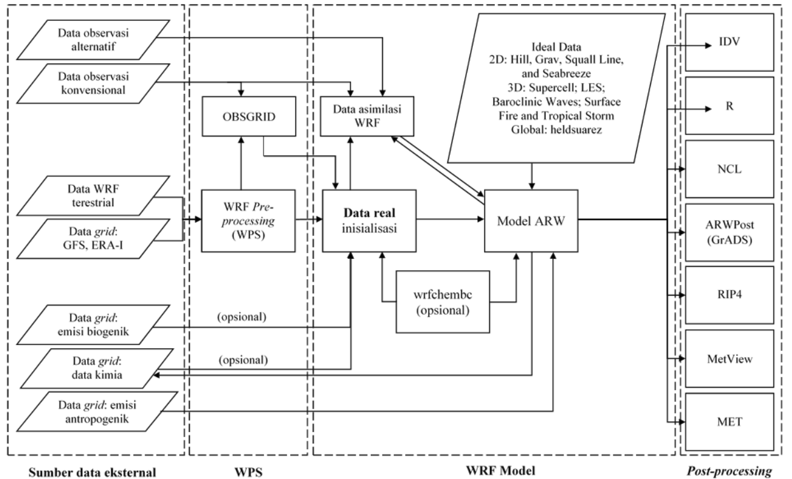
Jika Anda menutup terminal bash atau mematikan laptop/komputer, definisikan kembali ENVIRONMENT VARIABLE seperti pada saat proses memasang WRF dan WPS. Variabel yang perlu didefinisikan hanya 3 saja seperti pada perintah di bawah ini. Anda dapat memasukkan variabel ini pada file .bashrc atau .bash_profile di direktori $HOME.
export ODIR=$HOME/WRF-Model
export PATH=$ODIR/bin:$PATH
export LD_LIBRARY_PATH=$ODIR/lib:$LD_LIBRARY_PATHBagi pengguna Compiler Intel, Anda perlu menambahkan perintah di bawah ini. Perintah ini diperlukan pada saat menjalankan WRF.
ulimit -s unlimited2.4.1 Program WPS
Untuk lebih mudah dalam memahami alur proses simulasi WRF pada modul ini, lokasi/domain yang dipilih untuk adalah Kota Surabaya dengan periode 1-3 Januari 2022 dengan data GFS dan ERA5. Interval waktu dari kedua data tersebut adalah 6 jam, yaitu pukul 00:00, 06:00, 12:00, dan 18:00 waktu Zulu (UTC+0). Langkah awal sebelum menjalankan WRF adalah menentukan lokasi dan waktu terlebih dahulu di dalam program WPS. Seperti yang telah dijelaskan sebelumnya, WPS memiliki 3 program utama: geogrid.exe, ungrib.exe, dan metgrid.exe.
Sesuai dengan kelanjutan dari subbab sebelumnya mengenai instalasi WRF, Anda saat ini berada di dalam folder WPS/. Jika lupa, Anda bisa mengetikkan kembali perintah ini.
cd $ODIR/WPSLangkah-langkah menjalankan program WPS adalah sebagai berikut.
2.4.1.1 Penentuan Lokasi dan Waktu Simulasi
Isi dari file namelist.wps pada saat awal instalasi seperti ini.
&share
wrf_core = 'ARW',
max_dom = 2,
start_date = '2019-09-04_12:00:00','2019-09-04_12:00:00',
end_date = '2019-09-06_00:00:00','2019-09-04_12:00:00',
interval_seconds = 10800
/
&geogrid
parent_id = 1, 1,
parent_grid_ratio = 1, 3,
i_parent_start = 1, 53,
j_parent_start = 1, 25,
e_we = 150, 220,
e_sn = 130, 214,
geog_data_res = 'default','default',
dx = 15000,
dy = 15000,
map_proj = 'lambert',
ref_lat = 33.00,
ref_lon = -79.00,
truelat1 = 30.0,
truelat2 = 60.0,
stand_lon = -79.0,
geog_data_path = '/glade/work/wrfhelp/WPS_GEOG/'
/
&ungrib
out_format = 'WPS',
prefix = 'FILE',
/
&metgrid
fg_name = 'FILE'
/Terdapat berbagai macam parameter di dalam &share, &geogrid, &ungrib, dan &metgrid. Anda perlu mengubah beberapa parameter tersebut yang dapat disesuaikan dengan simulasi. Tapi, Anda harus memperhatikan aturan atau template yang telah diberikan di dalam panduan pengguna. Untuk lebih rincinya, Anda bisa lihat di Panduan Pengguna WRF-ARW Bab 3. Di dalam tahapan ini, Anda perlu mengubah parameter-parameter yang ada di dalam &geogrid. Pada contoh yang telah kami berikan, Anda perlu mengganti parameter pada bagian &share dan &geogrid di dalam file namelist.wps. Anda dapat menggunakan teks editor nano.
nano namelist.wpsFile yang telah berubah menjadi seperti di bawah ini.
&share
wrf_core = 'ARW',
max_dom = 3,
start_year = 2022, 2022, 2022,
start_month = 01, 01, 01,
start_day = 01, 01, 01,
start_hour = 00, 00, 00,
end_year = 2022, 2022, 2022,
end_month = 01, 01, 01,
end_day = 03, 03, 03,
end_hour = 18, 18, 18,
interval_seconds = 21600,
io_form_geogrid = 2,
/
&geogrid
parent_id = 1, 1, 1,
parent_grid_ratio = 1, 3, 9,
i_parent_start = 1, 11, 15,
j_parent_start = 1, 11, 15,
e_we = 33, 40, 46,
e_sn = 33, 40, 46,
geog_data_res = 'default','default','default',
dx = 18000,
dy = 18000,
map_proj = 'mercator',
ref_lat = -7.328,
ref_lon = 112.741,
truelat1 = -7.328,
geog_data_path = '/home/absen/WRF-Model/data/WPS_GEOG/'
/
&ungrib
out_format = 'WPS',
prefix = 'FILE',
/
&metgrid
fg_name = 'FILE'
io_form_metgrid = 2,
/Penjelasan setiap variabel dapat dilihat pada Tabel 2.2.
| Variabel | Keterangan |
|---|---|
wrf_core |
Tipe penyelesaian WRF, ARW atau NMM |
max_dom |
Jumlah domain, semakin banyak domain maka semakin tinggi resolusi spasialnya |
start_date |
Waktu mulai simulasi sesuai dengan data masukan. Format: YYYY-MM-DD_HH:mm:ss |
end_date |
Waktu akhir simulasi sesuai dengan data masukan. Format: YYYY-MM-DD_HH:mm:ss |
interval_seconds |
Interval waktu dari data masukan (dalam detik) |
io_from_geogrid |
Tipe format file luaran geogrid.exe (1 = binary, 2 = netcdf, 3 = GRIB1) |
parent_id |
Untuk domain paling kasar, nilainya 1. Domain selanjutnya juga bernilai 1 yang menandakan bahwa subdomain merupakan bagian dari domain utamanya |
parent_grid_ratio |
Rasio piksel dari dx dan dy pada domain ke-1. Domain paling kasar adalah 1 dan selanjutnya mengikuti rasio yang diinginkan. |
i_parent_start |
Nomor indeks acuan untuk koordinat X. Domain paling kasar bernilai 1, ditentukan dari kiri-bawah |
j_parent_start |
Nomor indeks acuan untuk koordinat Y. Domain paling kasar bernilai 1, ditentukan dari kiri-bawah |
e_we |
Jumlah grid/piksel dari barat ke timur mengikuti rumus parent_grid_ratio * N + 1, dengan \(N > 0\) |
e_sn |
Jumlah grid/piksel dari selatan ke utara mengikuti rumus parent_grid_ratio * N + 1, dengan \(N > 0\) |
geog_data_res |
Pemilihan resolusi spasial dari data statik |
dx |
Resolusi spasial pada koordinat X (dalam meter) |
dy |
Resolusi spasial pada koordinat Y (dalam meter) |
map_proj |
Sistem proyeksi peta (mercator, lambert, polar, lat-lon). Untuk simulasi di sekitar khatulistiwa, direkomendasikan menggunakan mercator |
ref_lat |
Koordinat lintang titik tengah acuan dari domain paling kasar |
ref_lon |
Koordinat bujur titik tengah acuan dari domain paling kasar |
truelat1 |
Koordinat lintang sebenarnya. Dibutuhkan untuk sistem proyeksi mercator, polar, dan lambert |
geog_data_path |
Lokasi folder WPS_GEOG |
Pada parameter start_date dan end_date, Anda bisa menggunakan parameter lain dengan membagi masing-masing format tahun (start_year; end_year), bulan (start_month; end_month), tanggal (start_day; end_day), dan jam (start_hour; end_hour).
Berkaitan dengan skala resolusi spasial pada simulasi yang akan dijalankan dengan pemilihan lokasi di Kota Surabaya, skala tertingginya adalah 2 km. Anda perhatikan parameter parent_grid_ratio. Nilai 1, 3, dan 9 secara berturut-turut merupakan rasio terhadap dx atau dy untuk setiap domain. Nilai 1 berarti untuk domain terluar dengan skala \(1 / 1 * 18000 = 18000\) meter, sedangkan nilai 3 untuk domain ke-2 dengan skala \(1 / 3 * 18000 = 6000\) meter.
Pada bagian &geogrid, penentuan lokasi kajian ini cukup rumit. Anda bisa menggunakan halaman Github https://jiririchter.github.io/WRFDomainWizard untuk membuat file namelist.wps sesuai dengan lokasi yang Anda inginkan, setidaknya Anda dapat menyalin teks pada bagian &geogrid Gambar 2.10.
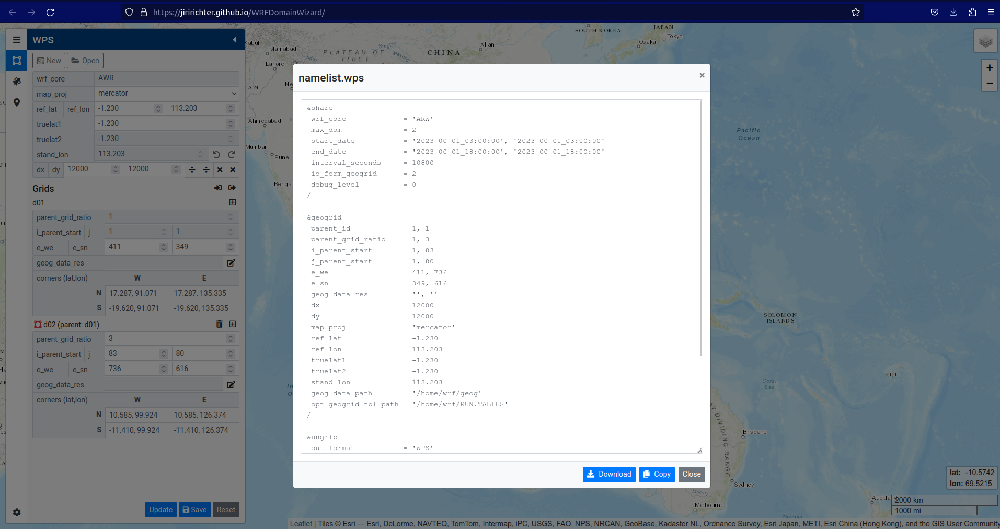
Untuk memverifikasi kesesuaian pemilihan lokasi yang telah dibuat, Anda dapat menggunakan skrip plotgrids_new.ncl di dalam folder util/. Bukalah file tersebut. Cari dan ubahlah variabel type = x11 menjadi type = png untuk mengatur luaran file dalam bentuk gambar (format .png). Untuk menjalankan skrip ini, aktifkan terlebih dahulu environment ncl dengan perintah source activate ncl atau conda activate ncl. Kemudian, jalankan perintah berikut ini. File .png akan muncul di dalam folder WPS/ dengan nama wps_show_dom.png. Hasilnya seperti Gambar 2.11
cd $HOME/WRF-Model/WPS
ncl util/plotgrids_new.ncl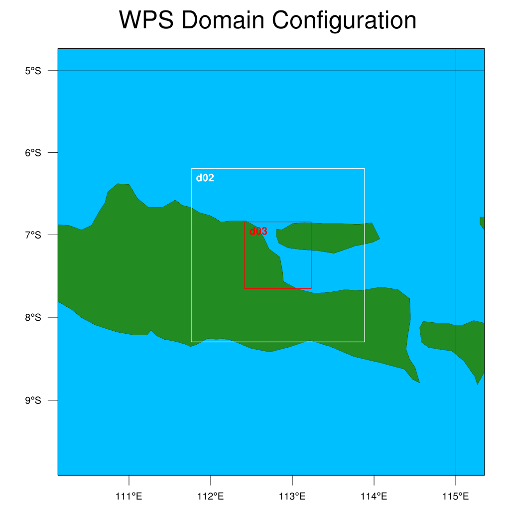
2.4.1.2 Menjalankan Program geogrid.exe
Selanjutnya, Anda dapat menjalankan program geogrid.exe dengan perintah di bawah ini. Hasilnya, terdapat 3 file dengan nama geo_em.d0x.nc (dengan x = nomor domain; 1, 2, 3) karena pengaturan max_dom = 3.
./geogrid.exels geo_em*geo_em.d01.nc geo_em.d02.nc geo_em.d03.nc2.4.1.3 Menyambungkan File Data Masukan dan Tabel Variabel
WPS menyediakan program link_grib.csh untuk menyambungkan file data masukan ke dalam folder WPS/ dengan membuat shortcut yang bernama GRIBFILE.* (GRIBFILE.AAA, GRIBFILE.AAB, …). Perintahnya sebagai berikut.
./link_grib.csh $ODIR/data/GFS/*Kemudian, buatlah shortcut dengan nama Vtable di dalam folder WPS/ dari file yang berada di dalam folder ungrib/Variable_Tables. Untuk data GFS, nama file tersebut adalah Vtable.GFS, sedangkan ERA5 adalah Vtable.ERA-Interim.pl. Perintahnya sebagai berikut.
ln -sf ungrib/Variable_Tables/Vtable.GFS Vtable # GFS
ln -sf ungrib/Variable_Tables/Vtable.ERA-Interim.pl Vtable # ERA52.4.1.4 Menjalankan Program ungrib.exe
Setelah menyambungkan data masukan serta tabel variabel, jalankan program ungrib.exe dengan perintah berikut.
./ungrib.exeLuaran dari program ini adalah file dengan nama FILE:* yang memiliki format .nc (netcdf).
2.4.1.5 Menjalankan Program metgrid.exe
Jalankan program metgrid.exe dengan perintah berikut.
./metgrid.exeLuaran dari program ini adalah file dengan nama met_em* yang memiliki format .nc. File-file ini nanti yang akan dipindahkan menuju folder WRF/test/em_real atau Anda dapat juga membuat shortcut. Perintahnya sebagai berikut.
mv met_em* $ODIR/WRF/test/em_real # memindahkan semua file met_em* ke folder WRF/test/em_real
# atau
ln -sf met_em* $ODIR/WRF/test/em_real # membuat shortcut di folder WRF/test/em_real2.4.2 Program WRF
Pada bagian ini, program WRF yang digunakan hanya 2: real.exe dan wrf.exe. Sebelum itu, Anda diharuskan mengubah beberapa parameter pada file namelist.input seperti di dalam file namelist.wps. Parameter di dalam namelist.input sangat banyak karena terdapat bagian pemilihan lokasi dan waktu (disesuaikan dengan namelist.wps), pemilihan skema parameter fisik, dan parameter dinamik. Kami hanya memberikan beberapa parameter yang diperlukan untuk contoh simulasi. Anda dapat membaca lebih lanjut di Panduan Pengguna WRF Bab 5.
2.4.2.1 Mengubah isi namelist.input
Saat ini Anda masih berada di folder WPS/. Buka terlebih dahulu folder em_real dengan perintah
cd $ODIR/WRF/test/em_realDi dalam folder em_real, terdapat 4 program, yaitu real.exe, ndown.exe, tc.exe, dan wrf.exe. Nilai max_dom pada namelist.wps adalah 3. Jika pemilihan lokasi Anda memiliki >1 domain, WRF akan memproses simulasi sampai pada domain tertinggi atau disebut dengan nesting. Proses ini juga dibagi lagi menjadi 2, yaitu nesting dua arah dan satu arah. Untuk nesting satu arah, program yang digunakan bisa atau tanpa dengan program ndown.exe. Penggunaan nesting satu arah biasanya pengguna hanya tertarik pada analisis domain tertinggi. Penggunaan ndown.exe juga sering digunakan pada turunan WRF, yaitu WRF-Chem. Untuk nesting dua arah, proses-proses perhitungan fisis pada domain tertinggi akan dikembalikan (feedback) ke domain terendah sehingga proses analisis dapat dilakukan pada semua domain. Anda dapat membaca lebih lanjut mengenai nesting di https://ruc.noaa.gov/wrf/wrf-chem/wrf_tutorial_2012_brazil/WRF_nesting.pdf.
Bukalah file namelist.input dengan cara sama seperti Anda membuka namelist.wps. Ketika pertama kali dibuka, file namelist.input seperti di bawah ini. Anda juga dapat melihat beberapa contoh/template lain (mis. namelist.input.4km, namelist.input.chem, namelist.input.volc, …) sesuai dengan kebutuhan tertentu.
&time_control
run_days = 0,
run_hours = 36,
run_minutes = 0,
run_seconds = 0,
start_year = 2019, 2019,
start_month = 09, 09,
start_day = 04, 04,
start_hour = 12, 12,
end_year = 2019, 2019,
end_month = 09, 09,
end_day = 06, 06,
end_hour = 00, 00,
interval_seconds = 10800
input_from_file = .true.,.true.,
history_interval = 60, 60,
frames_per_outfile = 1, 1,
restart = .false.,
restart_interval = 7200,
io_form_history = 2
io_form_restart = 2
io_form_input = 2
io_form_boundary = 2
/
&domains
time_step = 90,
time_step_fract_num = 0,
time_step_fract_den = 1,
max_dom = 2,
e_we = 150, 220,
e_sn = 130, 214,
e_vert = 45, 45,
dzstretch_s = 1.1
p_top_requested = 5000,
num_metgrid_levels = 34,
num_metgrid_soil_levels = 4,
dx = 15000,
dy = 15000,
grid_id = 1, 2,
parent_id = 0, 1,
i_parent_start = 1, 53,
j_parent_start = 1, 25,
parent_grid_ratio = 1, 3,
parent_time_step_ratio = 1, 3,
feedback = 1,
smooth_option = 0
/
&physics
physics_suite = 'CONUS'
mp_physics = -1, -1,
cu_physics = -1, -1,
ra_lw_physics = -1, -1,
ra_sw_physics = -1, -1,
bl_pbl_physics = -1, -1,
sf_sfclay_physics = -1, -1,
sf_surface_physics = -1, -1,
radt = 15, 15,
bldt = 0, 0,
cudt = 0, 0,
icloud = 1,
num_land_cat = 21,
sf_urban_physics = 0, 0,
fractional_seaice = 1,
/
&fdda
/
&dynamics
hybrid_opt = 2,
w_damping = 0,
diff_opt = 2, 2,
km_opt = 4, 4,
diff_6th_opt = 0, 0,
diff_6th_factor = 0.12, 0.12,
base_temp = 290.
damp_opt = 3,
zdamp = 5000., 5000.,
dampcoef = 0.2, 0.2,
khdif = 0, 0,
kvdif = 0, 0,
non_hydrostatic = .true., .true.,
moist_adv_opt = 1, 1,
scalar_adv_opt = 1, 1,
gwd_opt = 1, 0,
/
&bdy_control
spec_bdy_width = 5,
specified = .true.
/
&grib2
/
&namelist_quilt
nio_tasks_per_group = 0,
nio_groups = 1,
/Pada file ini, samakan beberapa parameter seperti di file namelist.wps. Perhatikan Tabel 2.3. Anda cukup mencari parameter yang sama antara namelist.wps dengan namelist.input, tetapi tidak semuanya ada di dalam namelist.input. Untuk parameter lainnya, seperti parent_time_step_ratio, time_step, history_interval, frame_per_outfile, dan seterusnya, Anda dapat membacanya lebih banyak di Panduan Pengguna WRF Bab 5 atau bisa dilihat pada file README.namelist di dalam folder test/em_real untuk setiap penjelasan singkat berbagai parameter.
Bagian &time_control berfungsi sebagai pengaturan waktu simulasi serta luaran yang akan dihasilkan. Sebagai informasi, file luaran WRF berformat NetCDF (.nc) dengan nama
wrfout_<domain>_<yyyy>-<mm>-<dd>_<HH>:<MM>:<SS>, dimana
- domain: identitas domain (d01, d02, …)
- yyyy: tahun, dengan format 4 digit
- mm: bulan, dengan format 2 digit
- dd: tanggal, dengan format 2 digit
- HH: jam, dengan format 2 digit
- MM: menit, dengan format 2 digit
- SS: detik, dengan format 2 digit
Pada parameter run_days, run_hours, run_minutes, dan run_seconds, ini dapat dihitung dari selisih waktu akhir simulasi dengan awal simulasi. Pada simulasi yang akan dicoba dalam modul ini, yaitu 1 Januari 2022 pukul 00:00 UTC hingga 3 Januari 2022 18:00 UTC, nilai dari run_days dan run_hours secara berturut-turut adalah 2 dan 18. Anda juga dapat mengatur run_days ini menjadi 0 setelah dikonversi menjadi jam (2 hari = 48 jam) dan tambahkan ke run_hours, yaitu menjadi 66. Parameter history_interval digunakan untuk meletakkan nilai pada file luaran WRF dalam format .nc dengan waktu tertentu (dalam menit). Misalkan diatur ke 60, berarti hasil perhitungan dari berbagai algoritma WRF dimasukkan ke file setiap 60 menit sekali. Anda bebas mengatur angka pada parameter ini. Dampaknya, ukuran file akan semakin besar jika Anda mengatur nilainya kecil. Tentu ini tidak akan menjadi masalah apabila ruang kosong penyimpanan internal/eksternal Anda masih banyak. Banyaknya file luaran dapat pula diatur jumlahnya, yaitu di dalam parameter frames_per_outfile. Jika parameter diatur pada frames_per_outfile = 1, history_interval = 60, dan run_hours = 66, berarti file luaran yang akan dibuat dan disimpan ke dalam penyimpanan adalah sebanyak 66 file. Agar lebih efektif saat akan melakukan analisis, kami menyarankan untuk mengatur frames_per_outfile = 1000.
Kemudian untuk bagian &domains, digunakan untuk mengatur kondisi dari domain agar dapat sesuai dengan data masukan (banyak grid horizontal dan vertikal, posisi, rasio grid, tipe interpolasi). Pada parameter feedback, Anda dapat mengatur tipe nesting dua arah (1) atau satu arah (0). Parameter num_metgrid_levels dan num_metgrid_soil_levels harus diatur sesuai dengan yang ada di dalam salah satu file met_em*. Untuk melihatnya, gunakan perintah di bawah ini. Nilai kedua parameter num_metgrid_levels dapat berbeda sesuai dengan data masukan yang digunakan. Sebagai contoh, GFS memiliki num_metgrid_levels = 34, sedangkan ERA5 num_metgrid_levels = 38.
ncdump -h met_em.d01.2022-01-01_00:00:00.nc | grep num_metgrid_levels # = 34
ncdump -h met_em.d01.2022-01-01_00:00:00.nc | grep NUM_METGRID_SOIL_LEVELS # = 4Di dalam bagian &physics, terdapat berbagai skema parameterisasi dalam penyelesaian perhitungan pembentukan awan, skemar radiasi, lapisan perbatas, serta proses-proses di permukaan tanah. Pada parameter physics_suite, Anda bisa mengaturnya ke TROPICAL karena wilayah yang ingin disimulasikan berada di daerah tropis. Hanya saja, opsi default untuk skema parameterisasi belum tentu menghasilkan luaran yang bagus sesuai dengan kondisi sebenarnya di daerah tropis. Anda perlu mengkaji dari beberapa publikasi nasional maupun internasional dalam memilih skema parameterisasi, khususnya di wilayah Indonesia. Ketika Anda mendefinisikan physics_suite = 'TROPICAL', Anda tidak perlu lagi menambahkan angka pada parameter di bawah ini.
mp_physics = 6: WSM6cu_physics = 16: New-Tiedkera_lw_physics = 4: Rapid Radiative Model Transformation for GCM (RRTMG)ra_sw_physics = 4: Rapid Radiative Model Transformation for GCM (RRTMG)bl_pbl_physics = 1: Yonsei Universitysf_sfclay_physics = 91: MM5 Monin-Obukhovsf_surface_physics = 2: Noah Land Surface Model
Anda hanya perlu menambahkan nilai -1 pada parameter-parameter tersebut, tentu saja sesuai dengan banyaknya domain. Anda juga dapat menghilangkan parameter physics_suite dan mengganti parameter mp_physics, cu_physics, sf_surface_physics, sf_sfclay_physics, ra_lw_physics, ra_sw_physics, dan bl_pbl_physics ke opsi lain yang ada di dalam Panduan Pengguna WRF Bab 5. Anda harus berhati-hati dan memperhatikan pemilihan skema parameterisasi karena terdapat parameter yang harus ditambahkan di dalam bagian &physics, menambahkan bagian lain, atau kombinasi antar skema. Sebagai contoh untuk sf_surface_physics = 4 (Noah-MP Land Surface Model), perlu menambahkan bagian &noah_mp; Ketika cu_physics = 14 (Scale-aware SAS), perlu menambahkan parameter shcu_physics = 4; Parameter bl_pbl_physics = 2 (Mellor-Yamada-Janjic, MYJ) nilai dari parameter sf_sfclay_physics = 2 (Eta Model). Untuk pengaturan nilai-nilai di dalam &physics, Anda harus menambahkannya sebanyak jumlah domain. Anda juga dapat menonaktifkan skema parameterisasi tertentu dengan mengubahnya ke 0, misalnya pada cu_physics untuk domain <10 km (domain 2 dan 3).
Parameter di namelist.wps |
Parameter di namelist.input |
|---|---|
start_year = 2022, 2022, 2022, |
start_year = 2022, 2022, 2022, |
start_month = 01, 01, 01, |
start_month = 01, 01, 01, |
start_day = 01, 01, 01, |
start_day = 01, 01, 01, |
start_hour = 00, 00, 00, |
start_hour = 00, 00, 00, |
end_year = 2022, 2022, 2022, |
end_year = 2022, 2022, 2022, |
end_month = 01, 01, 01, |
end_month = 01, 01, 01, |
end_day = 03, 03, 03, |
end_day = 03, 03, 03, |
end_hour = 18, 18, 18, |
end_hour = 18, 18, 18, |
| - | run_days = 2, |
| - | run_hour = 18, |
max_dom = 3, |
max_dom = 3, |
interval_seconds = 21600, |
interval_seconds = 21600, |
parent_id = 1, 1, 1, |
parent_id = 1, 1, 1, |
parent_grid_ratio = 1, 3, 9, |
parent_grid_ratio = 1, 3, 9, |
dx = 15000, |
dx = 15000, |
dy = 15000, |
dy = 15000, |
i_parent_start = 1, 11, 15, |
i_parent_start = 1, 11, 15, |
j_parent_start = 1, 11, 15, |
j_parent_start = 1, 11, 15, |
e_we = 33, 40, 46, |
e_we = 33, 40, 46, |
e_sn = 33, 40, 46, |
e_sn = 33, 40, 46, |
| - | parent_time_step_ratio = 1, 3, 9, (sama dengan parent_grid_ratio) |
| - | time_step = 90, dengan rumus \(6 * dx\) (dalam km) |
Isi file namelist.input yang telah diubah sepenuhnya menjadi seperti ini.
&time_control
run_days = 2,
run_hours = 18,
run_minutes = 0,
run_seconds = 0,
start_year = 2022, 2022, 2022,
start_month = 01, 01, 01,
start_day = 01, 01, 01,
start_hour = 00, 00, 00,
end_year = 2022, 2022, 2022,
end_month = 01, 01, 01,
end_day = 03, 03, 03,
end_hour = 18, 18, 18,
interval_seconds = 21600,
input_from_file = .true.,.true.,.true.,
history_interval = 60, 60, 60,
frames_per_outfile = 1000, 1000, 1000,
restart = .false.,
restart_interval = 7200,
io_form_history = 2
io_form_restart = 2
io_form_input = 2
io_form_boundary = 2
/
&domains
time_step = 90,
time_step_fract_num = 0,
time_step_fract_den = 1,
max_dom = 3,
e_we = 33, 40, 46,
e_sn = 33, 40, 46,
e_vert = 44, 44, 44,
dzstretch_s = 1.1
p_top_requested = 5000,
use_surface = .false.,
sfcp_to_sfcp = .true.,
num_metgrid_levels = 34, ! 34 = GFS, 38 = ERA5
num_metgrid_soil_levels = 4,
dx = 18000,
dy = 18000,
grid_id = 1, 2, 3,
parent_id = 1, 1, 1,
i_parent_start = 1, 11, 15,
j_parent_start = 1, 11, 15,
parent_grid_ratio = 1, 3, 9,
parent_time_step_ratio = 1, 3, 9,
feedback = 1,
smooth_option = 0
/
&physics
physics_suite = 'TROPICAL'
mp_physics = -1, -1, -1,
cu_physics = -1, 0, 0,
ra_lw_physics = -1, -1, -1,
ra_sw_physics = -1, -1, -1,
bl_pbl_physics = -1, -1, -1,
sf_sfclay_physics = -1, -1, -1,
sf_surface_physics = -1, -1, -1,
radt = 18, 18, 18,
bldt = 0, 0, 0,
cudt = 0, 0, 0,
icloud = 1,
num_land_cat = 21,
sf_urban_physics = 0, 0, 0,
fractional_seaice = 1,
/
&fdda
/
&dynamics
hybrid_opt = 2,
w_damping = 0,
diff_opt = 2, 2, 2,
km_opt = 4, 4, 4,
diff_6th_opt = 0, 0, 0,
diff_6th_factor = 0.12, 0.12, 0.12,
base_temp = 290.
damp_opt = 3,
zdamp = 5000., 5000., 5000.,
dampcoef = 0.2, 0.2, 0.2,
khdif = 0, 0, 0,
kvdif = 0, 0, 0,
non_hydrostatic = .true., .true., .true.,
moist_adv_opt = 1, 1, 1,
scalar_adv_opt = 1, 1, 1,
gwd_opt = 1, 0, 0,
/
&bdy_control
spec_bdy_width = 5,
specified = .true.
/
&grib2
/
&namelist_quilt
nio_tasks_per_group = 0,
nio_groups = 1,
/2.4.2.2 Menjalankan program real.exe dan wrf.exe
Program real.exe mengeluarkan file-file dalam format .nc, yaitu wrfbdy_d01 dan wrfinput_<domain>. Perintah menjalankan program ini adalah sebagai berikut.
./real.exeUntuk melihat respon dari program ini, Anda dapat melihat file rsl.errror.0000 dengan perintah
tail rsl.error.0000 -n 1Jika respon yang diberikan terdapat kalimat real_em: SUCCESS COMPLETE REAL_EM INIT, Anda bisa melanjutkan ke tahapan wrf.exe.
./wrf.exeSimulasi WRF dari program wrf.exe telah berhasil selesai apabila terdapat kalimat wrf: SUCCESS COMPLETE WRF pada baris terakhir rsl.error.0000 dan terdapat file wrfout_d0*. Untuk simulasi ini, terdapat 3 file wrfout_d0*: wrfout_d01_2022-01-01_00:00:00, wrfout_d02_2022-01-01_00:00:00, dan wrfout_d03_2022-01-01_00:00:00. Sejatinya, file-file tersebut berformat *.nc walaupun tidak tertera pada nama file. File wrfout_d0* memiliki interval waktu per 1 jam, dari pukul 00:00 UTC 1 Januari - 18:00 UTC 3 Januari 2022. Langkah selanjutnya, Anda dapat menganalisis luaran WRF dengan aplikasi apapun yang Anda bisa, selama mendukung format *.nc. Hanya saja, Anda perlu mengubah bentuk dan nama variabel WRF untuk disesuaikan dengan CF-Convention dengan program NCL yang telah disediakan di https://sundowner.colorado.edu/wrfout_to_cf/wrfout_to_cf.ncl.
Pengguna Docker di MacOS M1/M2 dapat menyalin file wrfout_* ke direktori lokal dengan perintah sebagai berikut.
docker cp <nama-container>:$HOME/WRF-Model/WRF/test/em_real/wrfout_* .2.5 Visualisasi Luaran WRF
Terdapat 3 file luaran WRF yang telah Anda jalankan dengan masing-masing memiliki resolusi spasial yang berbeda, yaitu 18 km, 6 km, dan 2 km dengan pemilihan lokasi titik tengah longitude dan latitude di Kota Surabaya. Selanjutnya, Anda dapat melihat hasil dari simulasi tersebut dengan berbagai macam perangkat lunak. Pada modul ini, kami menampilkan hasil simulasi dengan menggunakan aplikasi NCL, QGIS, Python, R, dan Julia.
2.5.1 Python
Untuk mengetikkan kode Python. Anda dapat menggunakan kode editor Jupyter Notebook atau aplikasi lainnya, seperti Visual Studio Code, Notepad++, atau Atom. Untuk langkah-langkah di bawah ini, kami lebih menjelaskan cara penulisan kode Python pada Jupyter Notebook. Kode editor ini dapat digunakan pada aplikasi Browser default Anda, misalnya Google Chrome, Safari, atau Microsoft Edge. Kami menyarankan Anda untuk menggunakan Jupyter Notebook agar hasil kode langsung bisa ditampilkan sehingga respons dari setiap sel dapat diketahui/dicetak secara langsung. Ikuti langkah-langkah berikut ini untuk membuka Jupyter Notebook.
Bukalah terminal Bash Anda. Saat ini, Anda berada di direktori
$HOMEatau~.Bukalah direktori
WRF-Modeldengan mengetik perintahcd WRF-ModelAktifkan terlebih dahulu Environment
ncldengan perintahconda activate ncl.Ketikkan perintah berikut ini untuk memulai pengetikan kode Python. Browser default Anda akan terbuka dengan menampilkan kode editor Jupyter Notebook Gambar 2.12
jupyter notebook
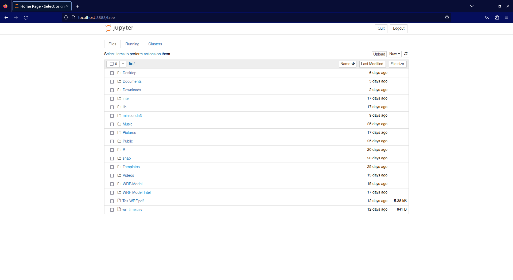
- Klik New dan pilih Python 3 (ipykernel). Tampilan awal Jupyter Notebook seperti pada Gambar 2.13
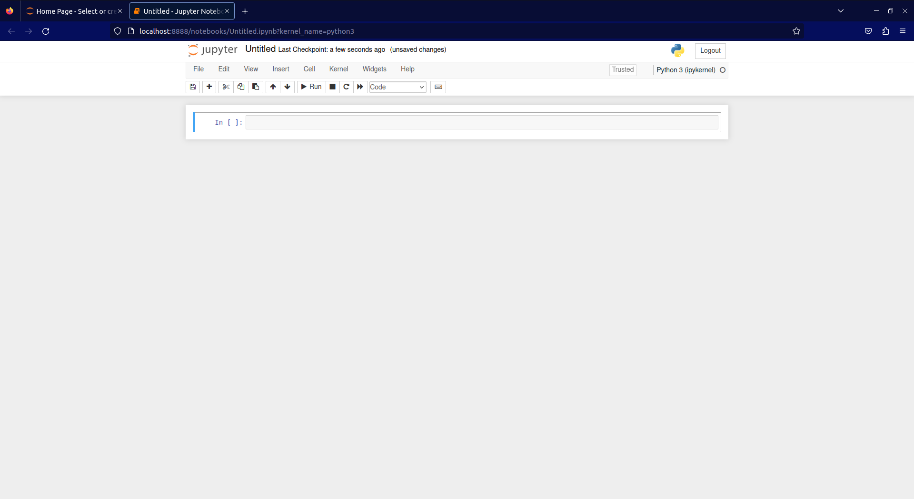
- Anda dapat langsung mendapatkan hasil dari kode yang ditulis pada sel (lihat
In [1]) (Gambar 2.14)
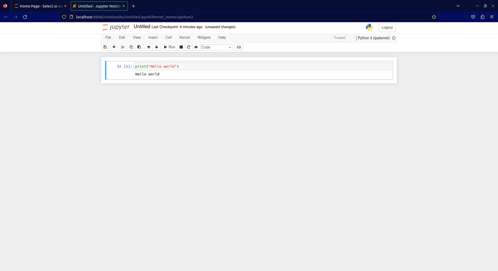
Untuk pengolahan data WRF di Python, kami menggunakan wrf-python (Ladwig 2017). Paket ini dikembangkan oleh NCAR yang dikhususkan untuk Post-Processing luaran WRF, mendukung pembacaan file, perhitungan interpolasi, serta visualisasi WRF. Perhatikan langkah-langkah berikut cara penggunaannya mulai dari pembacaan file hingga pembuatan grafik.
- Impor paket
from netCDF4 import Dataset
import wrf
import numpy as np
import matplotlib.pyplot as plt
import cartopy.crs as crsBuka salah satu file
wrfout_d0*, misalnyawrfout_d03_2022-01-01_00:00:00dan cetak variabel tersebut, misalkan variabelT2(Air Temperature at 2m: suhu udara 2 meter dari permukaan tanah). Isinya adalah beberapa metadata. Anda dapat mengetahui variabel-variabel di dalamnya dengan menambahkan metode.variables. Anda dapat melihat penjelasan variabel-variabel pada panduan pengguna WRF-ARW.# Lokasi folder luaran WRF wrf_path = '/home/absen/WRF-Model/WRF/test/em_real' # Membuka file wrfout wrf_d03 = Dataset(f"{wrf_path}/wrfout_d03_2022-01-01_00:00:00") # Melihat variabel wrf_d03.variablesAnda dapat mengambil variabel dengan fungsi
wrf.getvar()dengan menyertakan argumen dari nama variabel WRF. Untuk mengambilT2, gunakan perintah di bawah ini. Perhatikan hasil yang diperoleh merupakan tipexarray.DataArraydan metodewrf.ALL_TIMESpada argumentimeidxberguna untuk mengambil seluruh waktu, mulai dari awal hingga akhir simulasi. Anda dapat mengambil salah satu waktu dengan mencantumkan angka bulat (mis. 0, 1, 2, …).wrf_t2 = wrf.getvar(wrf_d03, "T2", timeidx=wrf.ALL_TIMES)Untuk mendapatkan nilai koordinat latitude dan longitude dari variabel
T2, Anda dapat memakai fungsiwrf.latlon_coords(). Pastikan dalam satu baris terdapat 2 variabel.lats, lons = wrf.latlon_coords(wrf_t2)Untuk mendapatkan waktu, Anda dapat memanggil Coordinates
Timeyang telah tersedia di dalamwrf_t2.wrf_time = wrf_t2.TimeAnda juga dapat mengekstrak beberapa variabel yang tidak tersedia di dalam WRF, tentunya terbatas, seperti resultan kecepatan angin (
wspd), arah angin (wdir), Convective Available Potential Energy (CAPE;cape3d_only/mcape), atau kelembapan relatif (rh2). Anda dapat membaca lebih lanjut di https://wrf-python.readthedocs.io/en/latest/diagnostics.html.Variabel curah hujan tidak ada di dalam WRF. Anda harus mengekstrak dan menjumlahkan variabel
RAINC(Accumulated Total Cumulus Precipitation) danRAINNC(Accumulated Total Grid Scale Cumulus Precipitation), maka diperoleh akumulasi curah hujan dari awal sampai akhir waktu simulasi. Anda perlu mengurangi curah hujan dari waktu ke \(t\) dengan \(t-1\) dengan memanfaatkan program perulangan (looping).# Ekstrak RAINC dan RAINNC rainc = wrf.getvar(wrf_d03, "RAINC" , timeidx = wrf.ALL_TIMES) rainnc = wrf.getvar(wrf_d03, "RAINNC", timeidx = wrf.ALL_TIMES) # Menghitung Curah hujan akumulasi rain = rainc + rainnc rain_diff = rain.copy() # Metode .copy() agar var rain tidak ikut terubah # Lakukan perulangan length = len(wrf_time.values) for i in range(1, length): rain_diff[i, :, :] = rain[i, :, :] - rain[i-1, :, :] # Copy Attribute (dari RAINC atau RAINNC) rain_diff.attrs = rainc.attrs # Tambahkan deskripsi rain_diff.attrs["description"] = "Total Rainfall" # Menghapus variabel rain untuk mengoptimalkan memori del rain
Setelah berhasil mengekstrak variabel dari langkah sebelumnya, langkah-langkah berikut ini adalah pembuatan grafik spasial dari variabel T2. Untuk membuatnya, Anda membutuhkan tambahan package matplotlib dan cartopy.
Anda telah mendefinisikan lokasi (variabel
latsdanlons) pada langkah sebelumnya. Kedua variabel tersebut digunakan dalam membuat grafik spasial.Variabel suhu udara yang telah diekstrak pada langkah sebelumnya memiliki waktu dari awal hingga akhir simulasi. Anda hanya dapat memilih salah satu waktu dalam 1 grafik. Anda juga dapat membuat grafik untuk masing-masing waktu dalam satu grafik dalam bentuk panel plot. Untuk membuat grafik pada waktu tertentu, Anda perlu memilih waktu dan mengetahui letak indeksnya.
time = "2022-01-02 13:00:00" time = np.array([time], dtype='datetime64[ns]') time_idx = np.where(wrf_time.values == time)[0] time_idx = int(time_idx)Sebagai contoh skrip di bawah ini untuk membuat grafik spasial hanya satu waktu.
# Mengambil informasi sistem proyeksi peta (dalam data ini adalah mercator) cart_proj = wrf.get_cartopy(wrf_t2, timeidx=time_idx) # Membuat dan mengatur ukuran grafik fig = plt.figure(figsize=(12, 10)) # Mengatur sistem proyeksi sesuai metadata WRF ax = plt.axes(projection=cart_proj) # Menambahkan garis pantai. Sumber data: www.naturalearthdata.com ax.coastlines(linewidth=0.8) # Menambahkan garis lintang dan bujur gl = ax.gridlines(draw_labels=True, linewidth=1, color='gray', alpha=0.5, linestyle='--') gl.top_labels = False # Menghilangkan label bujur di atas gl.right_labels = False # Menghilangkan label lintang di kanan # Mengatur nilai untuk skala legenda lvl = np.arange(290, 304, 2) # Menambahkan garis kontur terisi plt.contourf(lons, lats, wrf_t2[time_idx, :, :], levels=lvl, transform=crs.PlateCarree(), cmap='viridis') # Menambahkan legenda warna plt.colorbar(ax=ax, shrink=0.7) # Menampilkan grafik plt.show()
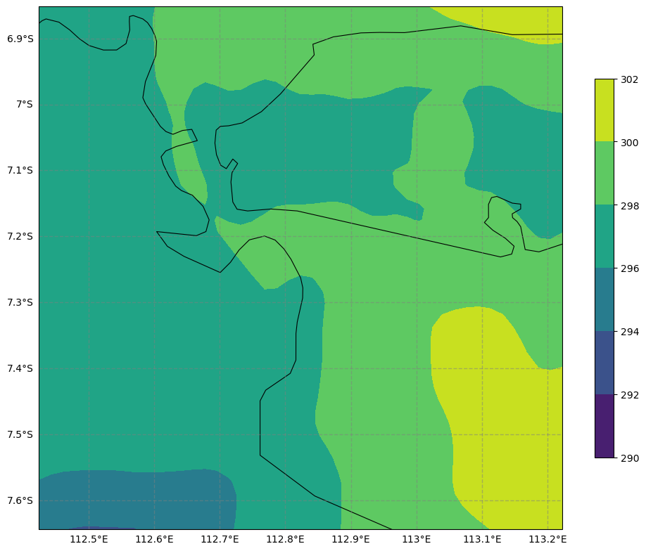
Selain spasial, Anda dapat pula menampilkan grafik seri waktu untuk titik koordinat atau rata-rata grid tertentu.
Tentukan titik koordinat yang akan dibuat grafik seri waktu
lats_sel = -7.271372797667375 lons_sel = 112.73417496409039Untuk menentukan indeks dari titik koordinat yang telah didefinisikan tersebut, gunakan fungsi
wrf.ll_to_xy(). Nilai yang dikeluarkan adalah indeks dari lokasi terdekat.latlon_idx = wrf.ll_to_xy(wrf_d03, lats_sel, lons_sel) wrf_t2_sel = wrf_t2[:, latlon_idx[1], latlon_idx[0]]Lakukan plot seri waktu
# Mengatur ukuran grafik fig = plt.figure(figsize=(12, 5)) ax = plt.axes() # Plot -> x: waktu, y: suhu udara (K) ax.plot(wrf_time, wrf_t2_sel.values) # Mengatur label dan judul ax.set_xlabel('Waktu') ax.set_ylabel('Suhu udara 2m (K)') ax.set_title(f'Suhu udara di {lats_sel}$^\circ$, {lons_sel}$^\circ$') # Tampilkan grafik plt.show()
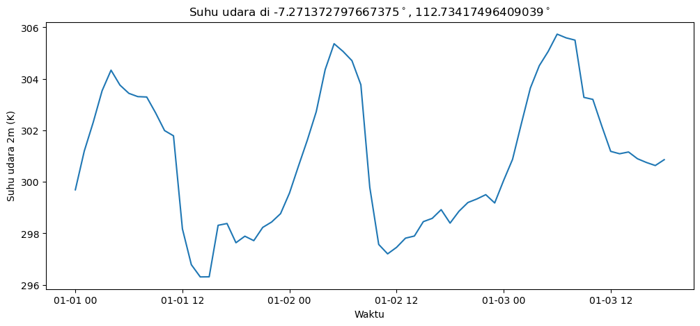
2.5.2 Python (tanpa wrf-python)
Anda juga dapat mengolah data luaran WRF tanpa memakai wrf-python. Anda bisa menggunakan modul xarray untuk membaca dan memanipulasi data. Perlu Anda ketahui bahwa data koordinat (latitude, longitude, dan waktu) dari luaran WRF akan terlihat berbeda karena belum menyesuaikan CF-Conventions. Oleh sebab itu, Anda bisa mengkonversi data WRF menjadi format CF-Conventions dengan NCL lalu dibaca dengan mengikuti langkah-langkah di bawah ini. Beberapa langkah di bawah ini, kami menjelaskan cara-cara teknik pembacaan data WRF tanpa mengikuti CF-Conventions.
- Impor paket
import xarray as xr
import numpy as np
import matplotlib.pyplot as plt
import cartopy.crs as crsBuka salah satu file
wrfout_d0*, misalnyawrfout_d03_2022-01-01_00:00:00dan cetak variabel tersebut, misalkan variabelT2(Air Temperature at 2m: suhu udara 2 meter dari permukaan tanah). Untuk melihat semua variabel, ketik saja nama variabel Python yang telah didefinisikan.# Lokasi folder luaran WRF wrf_path = '/home/absen/WRF-Model/WRF/test/em_real' # Membuka file wrfout wrf_d03 = xr.open_dataset(f"{wrf_path}/wrfout_d03_2022-01-01_00:00:00") # Mencetak isi semua variabel wrf_d03 # Mengambil variabel wrf_t2m = wrf_d03['T2']Pada langkah sebelumnya, Anda bisa langsung melakukan pembuatan grafik spasial
time = "2022-01-02 13:00:00" time = np.array([time], dtype='datetime64[ns]') time_idx = np.where(wrf_tme == time)[0] time_idx = int(time_idx) wrf_t2m[time_idx, :, :].plot.contourf()Akan tetapi, informasi koordinat spasial seperti latitude dan longitude tidak sesuai, yang ditampilkan hanyalah indeks lokasi (0, 1, 2, …). Anda perlu memodifikasi
wrf_t2mdengan cara memodifikasi informasi koordinat dengan mengambil variabel lokasi dan waktu di dalam filewrfout_d0*. Untuk latitude dan longitude, Anda bisa mengambil variabelXLATdanXLONG. Variabel waktu (XTIME) di dalam informasicoordinatestidak perlu dimodifikasi. Berikut ini adalah contoh kode untuk memodifikasi informasi koordinat.# Mengambil variabel XLAT dan XLONG wrf_lat = wrf_d03['XLAT'][0, :, 0].values wrf_lon = wrf_d03['XLONG'][0, 0, :].values # Mengambil variabel XTIME wrf_tme = wrf_d03['XTIME'].values # Membuat DataArray baru dengan informasi koordinat yang telah dimodifikasi wrf_t2m_new = xr.DataArray(wrf_t2m.values, coords = {'time': wrf_tme, 'lat': wrf_lat, 'lon': wrf_lon}, dims = ['time', 'lat', 'lon'])Terakhir, Anda bisa melakukan pembuatan grafik spasial dengan memanggil variabel
wrf_t2m_newyang telah dimodifikasi informasi koordinatnya. Tampilan grafik sama seperti Gambar 2.15.# Membuat dan mengatur ukuran grafik fig = plt.figure(figsize=(10, 7)) # Mengatur sistem proyeksi peta ax = plt.axes(projection=crs.PlateCarree()) # Menambahkan garis pantai. Sumber data: www.naturalearthdata.com ax.coastlines(linewidth=0.8) # Menambahkan garis lintang dan bujur gl = ax.gridlines(draw_labels=True, linewidth=1, color='gray', alpha=0.5, linestyle='--') gl.top_labels = False # Menghilangkan label bujur di atas gl.right_labels = False # Menghilangkan label lintang di kanan # Mengatur nilai untuk skala legenda lvl = np.arange(290, 304, 2) # Menambahkan garis kontur terisi plt.contourf(wrf_lon, wrf_lat, wrf_t2m_new[time_idx, :, :], levels=lvl, cmap='viridis') # Menambahkan legenda warna plt.colorbar(ax=ax, shrink=0.7) # Menampilkan grafik plt.show()
2.5.3 R
Anda dapat menggunakan RStudio untuk menuliskan skrip R. Untuk mengolah data WRF di R, Anda perlu memasang package ncdf4 dan raster terlebih dahulu. Untuk kebutuhan plot seri waktu, kami menggunakan package tidyverse.
Sebelum memulai pengetikan kode R, buatlah file skrip R dengan memilih menu File > New File > R Script.
Di console R pada RStudio, gunakan perintah berikut untuk memasang
ncdf4danraster.install.packages(c('ncdf4', 'raster'))Anda juga dapat menggunakan menu pada RStudio: Tools > Install Packaages. Kemudian, ketik “
ncdf4,raster” (tanpa tanda petik) pada bagian Packages (separate multiple with space or comma). Setelah itu, klik Install.Kami telah menyediakan fungsi skrip R untuk membuka file luaran WRF. Pada teks editor di RStudio, masukkan perintah berikut untuk mengimpor package
ncdf4danrasterbeserta skripwrf-raster.R. Fungsiwrf-raster.Rdapat diunduh di https://github.com/agungbaruna/modul-pemodelan-iklim/blob/main/scripts/wrf-raster.R. Letakkan fungsi ini di dalam folder Project RStudio Anda.library(ncdf4) library(raster) library(tidyverse) source('wrf-raster.R')Anda dapat menjalankan ketiga baris kode tersebut dengan memblok seluruh baris atau arahkan kursor pada akhir kode kemudian tekan tombol CTRL + ENTER.
Saat Anda menjalankan
source('wrf-raster.R'), muncul Functions dengan namawrf.rasterpada jendela Environment di RStudio (letak jendela di sebelah kanan atas).Untuk menggunakan fungsi
wrf.raster(), Anda hanya membutuhkan argumenwrf.file(nama folderwrfout_*) danvar.name(nama variabel di dalamwrfout_*). Nilai kembalian setelah menjalankan fungsi ini berbentukRasterBrick. Argumennlevdapat dicantumkan dengan angka bilangan bulat (1, 2, 3, …) khusus untuk variabel yang memiliki variasi terhadap ketinggian dan kedalaman, seperti suhu udara atau suhu tanah. Variabel lain yang tidak tercantum seperti curah hujan, sudah tersedia di dalam fungsi ini (var.name = rain).Sebagai contoh mengambil variabel curah hujan.
rain <- wrf.raster(wrf.file = '/home/absen/WRF-Model/WRF/test/em_real/wrfout_d01_2022-01-01_00:00:00', var.name = 'rain') rainclass : RasterBrick dimensions : 32, 32, 1024, 67 (nrow, ncol, ncell, nlayers) resolution : 0.1581326, 0.1567945 (x, y) extent : 110.2099, 115.2701, -9.821663, -4.804237 (xmin, xmax, ymin, ymax) crs : +proj=longlat +datum=WGS84 +no_defs source : memory names : layer.1, layer.2, layer.3, layer.4, layer.5, layer.6, ... min values : 0, 0, 0, 0, 0, 0, ... max values : 0.000000, 2.944275, 2.439148, 6.013021, 14.848666, 47.531946, ... time : 2022-01-01 00:00:00, 2022-01-03 18:00:00 (min, max)Pada respons melalui console R, terdapat berbagai informasi seperti
dimensions,resolution,crs, sertatime. Anda dapat mudah memahami isi dari filewrfout_d01*tersebut.Anda bisa langsung membuat grafik spasial dengan perintah 1 baris ini dan ditampilkan pada Gambar 2.16. Cukup sederhana.
plot(rain)
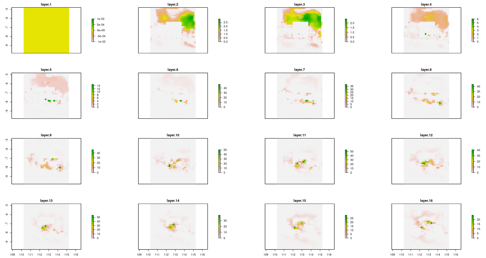
wrfout_d01*Untuk membuat grafik seri waktu pada lokasi tertentu, Anda dapat menggunakan fungsi
extract()danplot()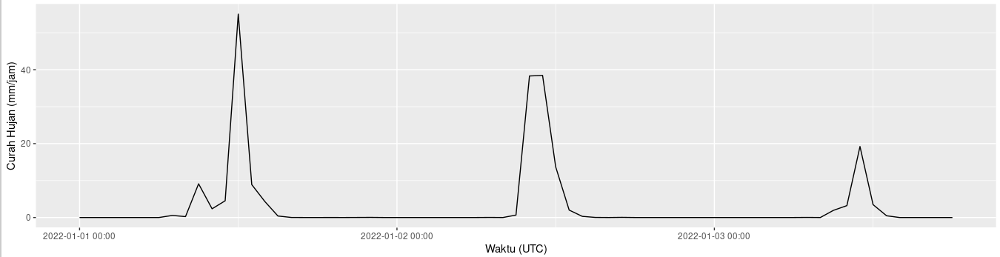# Waktu time_sel <- getZ(rain) # Lokasi lats_sel <- -7.271372797667375 lons_sel <- 112.73417496409039 # Ekstrak nilai curah hujan berdasarkan lokasi rain_sel <- extract(rain, data.frame(x = lons_sel, y = lats_sel)) # Plot grafik seri waktu ggplot() + geom_line(aes(x = time_sel, y = rain_sel[1,])) + scale_x_datetime("Waktu (UTC)", date_labels = "%Y-%m-%d %H:%M") + scale_y_continuous("Curah Hujan (mm/jam)")
2.5.4 NCL
NCAR telah menyediakan contoh skrip pengolahan data WRF dengan NCL. Anda dapat mengakses lebih banyak di https://www.ncl.ucar.edu/Applications/wrf.shtml. File netcdf luaran WRF pada dasarnya berbeda dengan file netcdf pada umumnya karena tidak mengikuti pedoman Climate and Forecast Convention. Alhasil, mengolah data WRF menggunakan aplikasi lain seperti ArcMap atau Matlab cukup rumit. Jika Anda ingin cukup mudah mengolahnya dengan aplikasi lainnya, skrip NCL untuk mengubah WRF menjadi CF-Convention dibuat oleh Mark Seefeldt dan telah tersedia di https://sundowner.colorado.edu/wrfout_to_cf/wrfout_to_cf.ncl. Berikut ini adalah cara penggunakan skrip wrfout_to_cf.ncl.
Aktifkan terlebih dahulu environment
nclpada terminal. Tulisan(base)menjadi(ncl)setelah perintah berhasil dipanggil.conda activate nclAnda hanya perlu memasukkan variabel
dir_in(lokasi folder wrfout),dir_out(lokasi folder wrfout setelah dikonversi),file_in(nama file wrfout), danfile_out(nama file wrfout setelah dikonversi).Masukkan perintah berikut.
ncl 'dir_in="/home/absen/WRF-Model/WRF/test/em_real/"' 'file_in="wrfout_d01_2022-01-01_00:00:00"' 'file_out="wrfout_cf_d01_2022-01-01_00:00:00.nc"' wrfout_to_cf.nclAnda dapat mengolah data luaran WRF setelah dikonversi menjadi CF-Convention pada aplikasi apapun dengan mudah. Hanya saja, Anda perlu memperhatikan perubahan nama variabel dan sesuaikan dengan data WRF asli.
Selain mengubah menjadi CF-Convention, Anda dapat langsung menerapkan skrip NCL untuk analisis maupun visualisasi. Sebagai contoh skrip berikut ini untuk menampilkan suhu udara dekat permukaan dari luaran wrfout_d01*. Perlu diperhatikan bahwa simbol ; adalah komentar di dalam NCL. Anda dapat mengganti format file dari luaran skrip ini (mis. png, pdf, atau x11).
;---Read file
fpath = "/home/absen/WRF-Model/WRF/test/em_real/"
filename = "wrfout_d01_2022-01-01_00:00:00"
a = addfile(fpath+filename, "r")
;---Get CEN_LAT and CEN_LON from WRF metadata (in global attributes)
cen_lat = a@CEN_LAT
cen_lon = a@CEN_LON
;---Select time index
nt = 30
;---Read temperature at first time step
tc = wrf_user_getvar(a, "tc", nt)
;---Open worksheet
wks = gsn_open_wks("png", "wrf_nogsn") ; Format file luaran grafik, contoh png
;---Set up resource list
res = True
res@gsnDraw = False
res@gsnFrame = False
res@tfDoNDCOverlay = True
;---Plotting options for air temperature
opts_r = res
opts_r@cnFillOn = True
opts_r@cnLevelSelectionMode = "ExplicitLevels"
opts_r@cnLevels = (/ 20, 22, 24, 26, 28, 30, 32 /)
opts_r@cnSmoothingOn = True
opts_r@cnSmoothingDistanceF = .005
;---Option for plt_res
plt_res = res
;---Option for plt_res
map_res = res
map_res@mpDataBaseVersion = "HighRes" ; Jika memilih "HighRes", Anda harus mengunduh semua file di
map_res@mpDataResolution = "FinestResolution" ; https://www.io-warnemuende.de/rangs-en.html
map_res@mpCenterLatF = cen_lat ; dan letakkan di folder $NCARG_ROOT/lib/ncarg/database/rangs
map_res@mpCenterLonF = cen_lon
map_res@mpGeophysicalLineColor = "black"
map_res@mpGeophysicalLineThicknessF = 2.0
map_res@mpGridSpacingF = 1.0
map_res@mpGridLineColor = "black"
;---Plot
contour_tot = wrf_contour(a, wks, tc(0,:,:), opts_r)
plot = wrf_map_overlays(a, wks, (/contour_tot/), plt_res, map_res)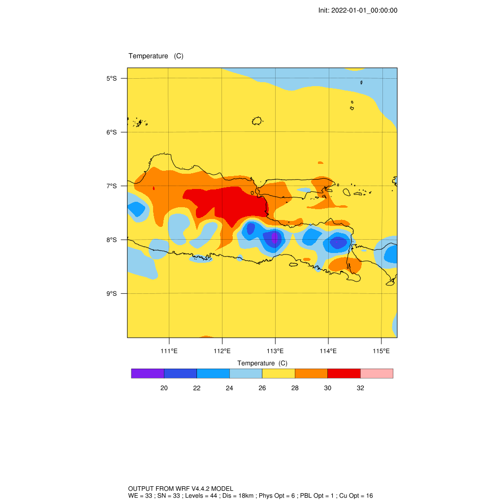
2.5.5 QGIS
Aplikasi QGIS dapat juga digunakan untuk mengolah data WRF. Untuk memudahkan pengolahan data WRF, Anda perlu mengubah data WRF menjadi CF-Convention dengan skrip NCL sebelumnya. Setelah itu, Anda dapat mengimpor data WRF yang telah terkonversi dalam format NetCDF Classic ke QGIS. Berikut ini adalah langkah-langkahnya.
Pada menu QGIS, pilih
Layer>Add Layer>Add Raster Layer(CTRL + SHIFT + R).Pada bagian Source, klik ikon
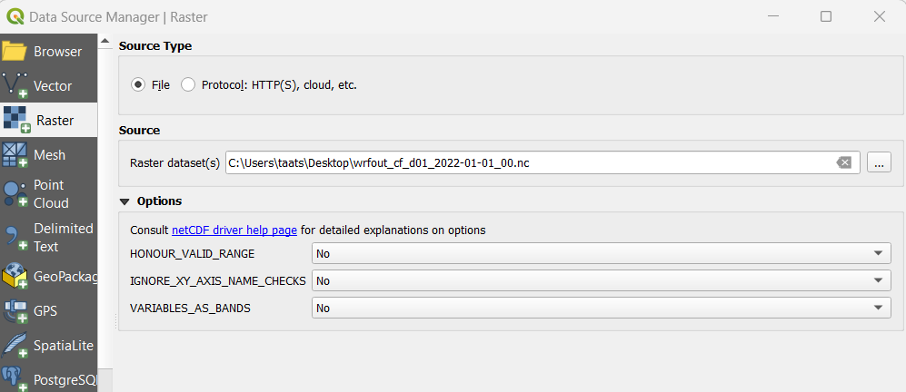...dan pilih filewrfout_*yang telah dikonversi menjadi CF-Convention.Pilih variabel yang ingin Anda tampilkan. Misalnya, Anda dapat memilih
T_2muntuk menampilkan suhu udara pada ketinggian 2 meter. KlikAdd Layers, kemudian klikAdd.Klik kanan pada raster yang telah diimpor dan pilih
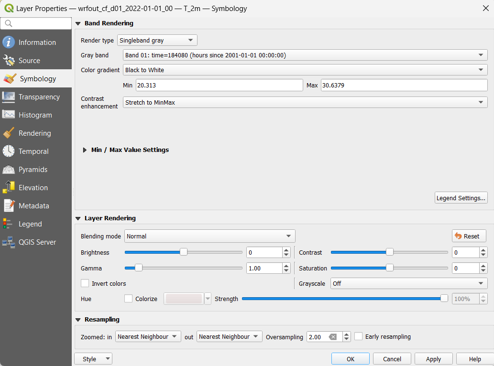Properties. Pada Band Rendering di bagian Render type, pilih Singleband Gray. Pada bagian Gray band, terdapat pilihan nomor Band yang berisikan waktu.Nilai maksimum dan minimum suhu udara dapat terlihat di bawah layer.
Setelah berhasil mengimpor, data raster dari WRF belum terproyeksi ke koordinat. Default sistem proyeksi pada QGIS kami adalah EPSG:4326 - WGS 84. Untuk mengubah sistem proyeksi, klik menu
Raster>Projections>Warp (Reproject). BagianInput layerdiisi dengan raster yang akan diubah sistem proyeksinya danTarget CRSdiisi dengan EPSG:4326 - WGS 84. Kemudian, klikRun.
Layer raster baru akan muncul dengan nama Reprojected. Klik kanan pada raster tersebut dan pilih Zoom to Layer(s)
Agar lebih meyakinkan, Anda dapat mengimpor file vector dari batas wilayah Indonesia. Untuk data ini, bisa Anda unduh di gadm.org. Pada contoh ini, kami menggunakan file
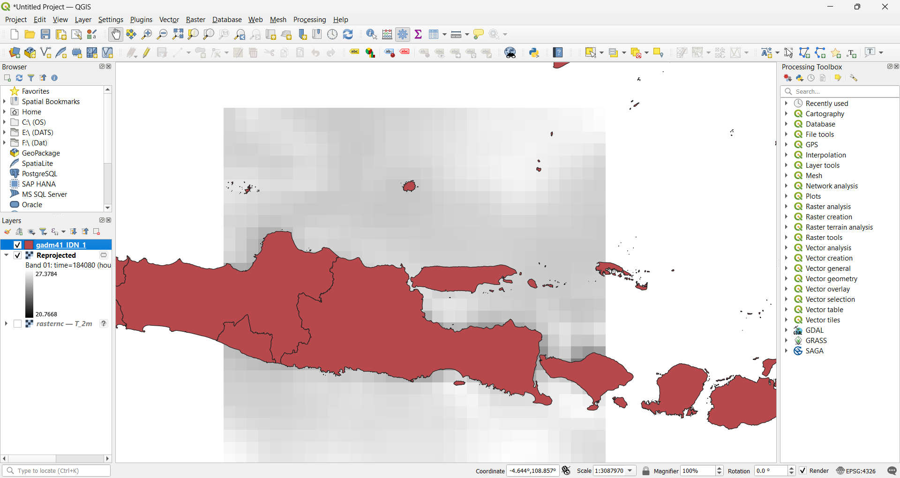*.json. Untuk mengimpornya, klik menuLayer>Add Layer>Add Vector Layer(CTRL + SHIFT + V). Pada bagian Source, klik ikon...dan pilih filegadm41_IDN_1.json. KlikAdd Layers, kemudian klikAdd.
2.5.6 Julia
Selain R dan Python, bahasa pemrograman Julia juga dapat digunakan untuk mengolah data WRF. Hanya saja, package khusus untuk WRF masih belum tersedia. Julia dapat digunakan di sistem operasi apa saja. Untuk pengguna Windows 10/11, Anda bisa menggunakan WSL atau terminal Windows langsung. Untuk membaca data netcdf dari WRF, algoritma yang kami berikan cukup memerlukan logika sehingga tidak semudah mengolahnya seperti di R. Anda dapat menggunakan package NCDatasets.jl, sedangkan untuk membuat grafik menggunakan Plots.jl. Berikut ini adalah langkah-langkahnya.
Buka terminal interaktif Julia dengan mengetik
julia.exepada Command Prompt/PowerShell atau carilah program Julia pada Start Menu.Buka Jupyter Notebook pada terminal interaktif Julia dengan perintah berikut ini.
using IJulia notebook()Aktifkan package
NCDatasets.jldanPlots.jl.using NCDatasets using PlotsAnda dapat menggunakan fungsi
ncread()untuk membaca data WRF sekaligus menentukan variabel yang ingin diimpor. Berikut ini adalah contoh untuk mengimpor data suhu udara pada ketinggian 2 meter.wrf_path = "C:\\Users\\taats\\Desktop\\"; wrf_file = joinpath(wrf_path, "wrfout_d01_2022-01-01_00"); ds = NCDataset(wrf_file, "r"); t2 = ds["T2"]T2 (32 × 32 × 67) Datatype: Float32 Dimensions: west_east × south_north × Time Attributes: FieldType = 104 MemoryOrder = XY description = TEMP at 2 M units = K stagger = coordinates = XLONG XLAT XTIME
Perhatikan tanda ; pada akhir baris kode. Tanda ini digunakan untuk menghilangkan respons dari kode tersebut. Cara ini sama seperti sintaks pada Matlab.
Dimensi pada variabel t2 bervariasi terhadap longitude (west_east), latitude (south_north), dan waktu (Time) secara berturut-turut. Cara membaca dimensi ini sama seperti pada package ncdf4 di R. Hanya saja, ini sudah didefinisikan di dalam skrip wrf-raster.R.
Sebelum menampilkan data, Anda perlu mengambil lokasi (latitude dan longitude).
lat = ds["XLAT"][1, :, 1]; lon = ds["XLONG"][:, 1, 1];Anda dapat menampilkan grafik spasial untuk 1 waktu dengan package
Plots.jldengan fungsiheatmap().nt = 1 # Indeks waktu = "2022-01-01 00:00:00" heatmap(lon, lat, transpose(t2[:, :, nt])) ylabel!("latitude") # Menambahkan label sumbu y xlabel!("longitude") # Menambahkan label sumbu xNilai pada setiap baris dari
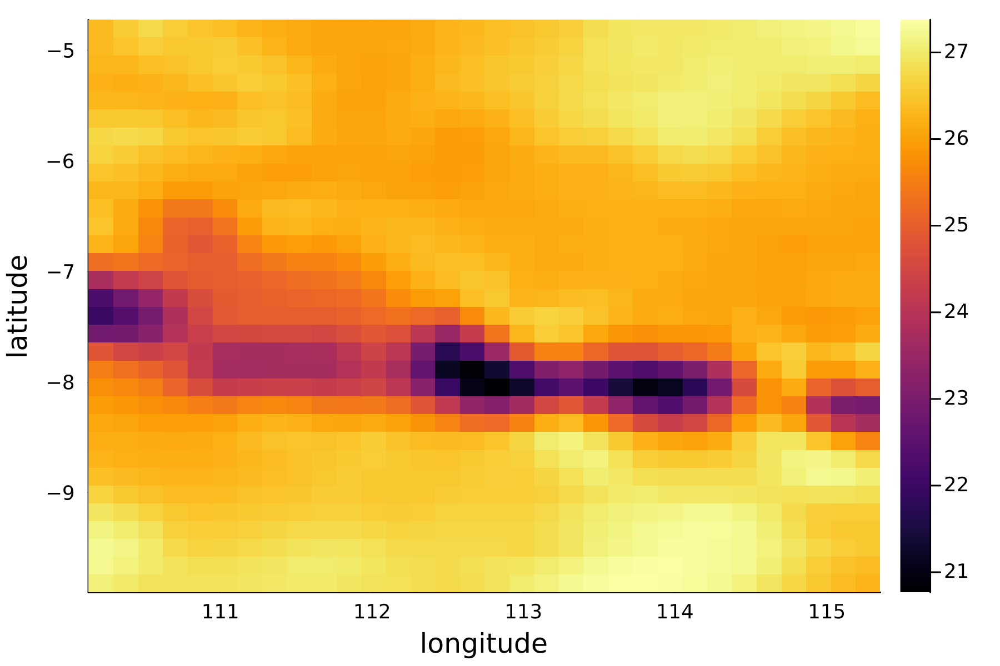t2bervariasi terhadap longitude, sedangkan pada kolom bervariasi terhadap latitude. Untuk menampilkan grafik dengan koordinat yang benar, Anda perlu membalikkan (baris ke kolom, dan sebaliknya) pada matrikst2dengan fungsitranspose().Selain divisualisasikan dalam bentuk grid/raster, Anda juga dapat menampilkan dalam bentuk kontur terisi dengan fungsi
contourf()dari packagePlots.jl.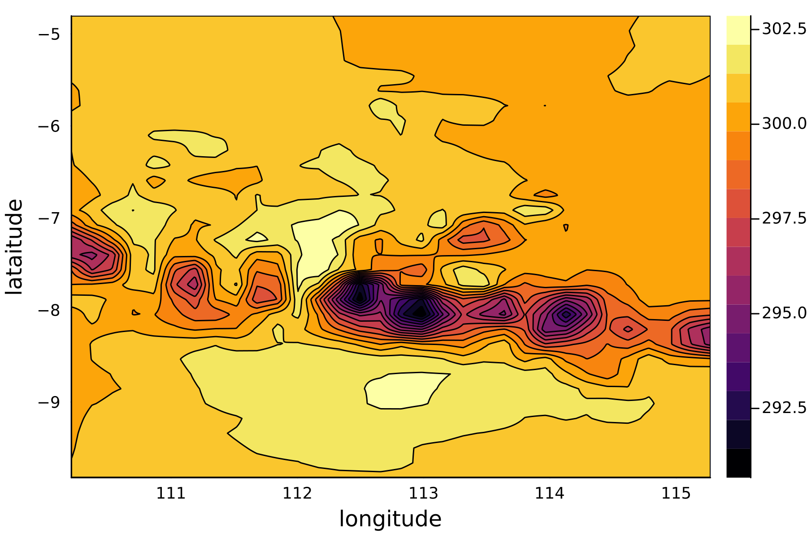nt = 10 # Indeks waktu = "2022-01-01 09:00:00" contourf(lon, lat, transpose(t2[:, :, nt])) ylabel!("latitude") # Menambahkan label sumbu y xlabel!("longitude") # Menambahkan label sumbu xUntuk grafik seri waktu, Anda dapat menggunakan fungsi
plot()dari packagePlots.jl. Berikut ini adalah contoh untuk menampilkan grafik seri waktu suhu udara pada ketinggian 2 meter.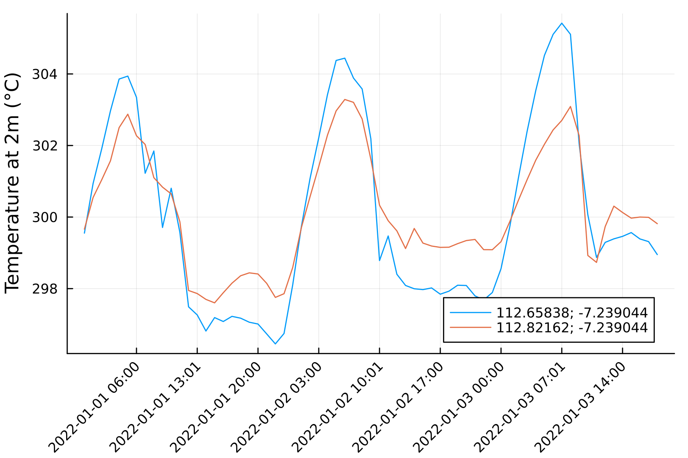using Dates # Mengambil variabel waktu time = ds["XTIME"]; ticks = Dates.format.(time, "yyyy-mm-dd HH:MM"); # Pemilihan lokasi lats_sel = -7.27; lons_sel = 112.73; lat_idx = findall(y -> (y > lats_sel - 0.1) && (y < lats_sel + 0.1), lat); lon_idx = findall(x -> (x > lons_sel - 0.1) && (x < lons_sel + 0.1), lon); lons = lon[lon_idx]; lats = lat[lat_idx]; # Membuat grafik seri waktu plot(ticks, t2[lon_idx[1], lat_idx[1], 1:length(time)], labels="$(lons[1]); $(lats[1])", xrotation=45) plot!(ticks, t2[lon_idx[2], lat_idx[1], 1:length(time)], labels="$(lons[2]); $(lats[1])") ylabel!("Suhu udara 2m (°C)") # Menambahkan label sumbu y xlabel!("Waktu (per 1 jam)") # Menambahkan label sumbu x